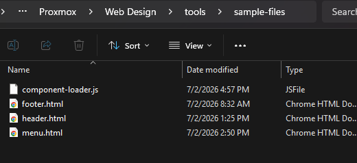
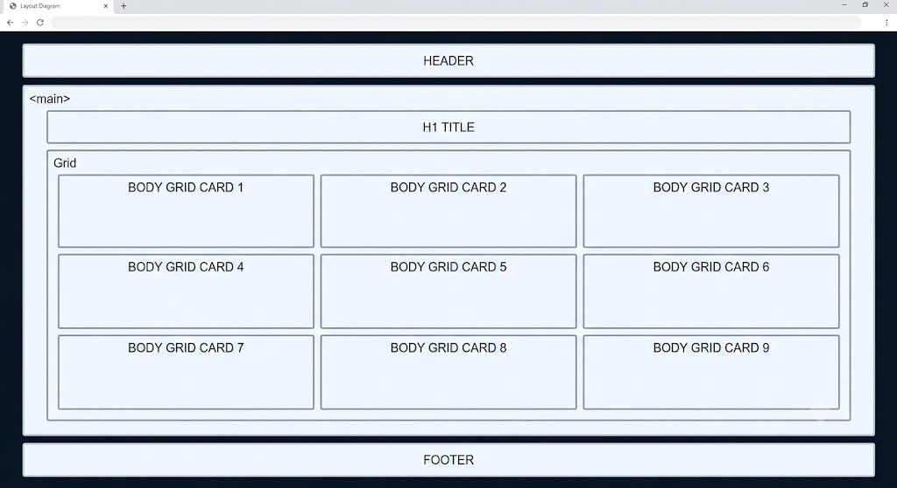
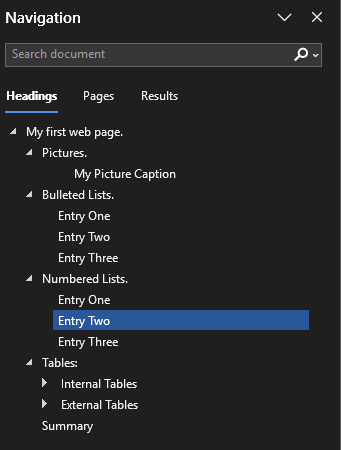

If it's not one thing, I must admit that building a web page is hard. It is even harder to build a website. With some basic tricks that I have learned along the way I want to share with you a simple way to build your own web site.
The 1st thing you need is a structure for your site, and then you need to start building web pages. I suggest you try not to design the web site yet. Just get a simple one up and running. Then try to manipulate it to meet your needs. They say the hardest thing about writing or painting or any creative thought is to get the 1st line or stroke on the page. Then change it to be your design. That is how we are going to start. Don't take the lazy way out and pay for a site developer. You will never own that design. They will have their hooks in you forever in modifications and maintenance.
Try this quick solution first. If you don’t like what you have you lost.
Lets set up our repository first. Open up VS Code (reference the VS Code procedure) and open the repository you created in the DNS procedure. You should see the readme that was created when you completed the DNS procedure.
Now on your local machine, when you connect to the github desktop it copied some files over to your local machine. Locate that path by looking github desktop Right click the repository on the top left of your screen and Select show in explorer.
Go up 1 directory from there and create a folder called tools.
My folder structure looks like this:
C:\Users\me\Documents\Proxmox\WebDesign.
And I created a folder there called tools. Notice that there are no spaces in this complete path. It just makes life easier
Create Initial Files.
Creating setup_site.bat
Open a new file in Notepad++ and save it in this directory. Call it setup_site.bat Make sure the extension is not .txt
In that Notepad ++ window paste in the following code:
@echo off
setlocal enabledelayedexpansion
:: Save the exact folder where this script is running from (%~dp0 includes a trailing \)
set "SCRIPT_SRC=%~dp0"
:: --- set the working directory that you want to use
set "TARGET_DIR=C:\Users\barne\Documents\ WebDesign\smart-home-edge-systems"
:: --- what domain name are you going to use
set "DOMAIN=smart-home-edge-systems.us"
:: Define the list of main categories
set "CATEGORIES=3d-printing home-assistant home-lab marketing media r-d storage surveillance voice"
echo ===================================================
echo %DOMAIN% MASTER MATRIX SETUP
echo ===================================================
echo.
echo Running from parent folder location...
echo Target Directory: %TARGET_DIR%
echo.
pause
:: 1. Force wipe the target project folder safely from the outside
if exist "%TARGET_DIR%" (
echo Wiping existing project directory contents...
rmdir /s /q "%TARGET_DIR%"
)
:: 2. Recreate the fresh project folder
echo Creating pristine project workspace...
mkdir "%TARGET_DIR%"
:: --- MOVE TO THE NEW DIRECTORY MATRIX ---
cd /d "%TARGET_DIR%"
:: --- CORE DIRECTORY MATRIX STRUCTURE ---
mkdir ".github\workflows" 2>NUL
mkdir "authors" 2>NUL
mkdir "styles" 2>NUL
mkdir "includes" 2>NUL
mkdir "assets\icons" 2>NUL
mkdir "assets\figures" 2>NUL
if exist "%SCRIPT_SRC%sample-files\*.html" (
move /y "%SCRIPT_SRC%sample-files\*.html" "includes\" >nul
)
:: --- PLACEHOLDER ENGINE GENERATION ---
type nul > "index.html"
type nul > "404.html"
type nul > "robots.txt"
type nul > "sitemap.xml"
type nul > "styles\global.css"
type nul > "authors\index.html"
:: Loop through each category
for %%C in (%CATEGORIES%) do (
echo Creating directories for: %%C
:: Create the subdirectories
mkdir "%%C\guides" 2>NUL
mkdir "%%C\reference" 2>NUL
mkdir "%%C\assets\figures" 2>NUL
mkdir "%%C\assets\icons" 2>NUL
:: Create internal files
type nul > "%%C\guides\index.html"
type nul > "%%C\reference\index.html"
type nul > "%%C\index.html"
)
:: --- GENERATE SYSTEM DOMAIN RULE FILTERS ---
echo %DOMAIN%> CNAME
:: --- SYSTEM GENERATED .GITIGNORE RULES ---
(
echo # Logs and system dumps
echo *.log
echo .DS_Store
echo Thumbs.db
echo.
echo # Backup and configuration assets to avoid tracking
echo *.bak
echo *.config
echo .env
echo.
echo # Proxmox / Home Assistant backup dumps
echo *.tar.gz
echo *.backup
) > .gitignore
:: --- LAUNCH VISUAL STUDIO CODE ---
echo.
echo Launching Visual Studio Code inside target workspace...
start "" code .
echo.
echo Framework ready! This script will now auto-close.
timeout /t 3
exit
Change the line
set "TARGET_DIR
to be your correct path including your domain name at the end
Change the line
set "DOMAIN=
to be your correct domain name.
There is a list of categories that looks like this
set "CATEGORIES=
This is a list of sub pages that you might like. You can reduce this to just a few for now or add directories later if you desire.
Once you make those changes save the file.
Creating component-loader.js
Create a directory at this level WebDesign\tools using Notepad++ create a new file and call it sample-files\component-loader.js
In that file paste:
/**
* SECTION 1: THE ASYNCHRONOUS COMPONENT INGESTION ENGINE
*
* This function functions as a client-side layout compiler. It performs an asynchronous
* background HTTP network request to download a raw HTML component file (like a menu or footer)
* and injects it into a designated placeholder container on the active web page.
*
* @param {string} elementId - The ID of the target HTML element container where the component will be injected.
* @param {string} filePath - The absolute web root file path location of the asset file (e.g., "/includes/menu.html").
* @param {function} callback - [Optional] A function to execute immediately after the HTML finishes loading into the page.
*/
function loadComponent(elementId, filePath, callback = null) {
// Trigger a modern, background asynchronous network request to fetch the static file
fetch(filePath)
.then(response => {
// Defensive boundary check: If the file is missing (404) or restricted (403), throw an explicit error
if (!response.ok) throw new Error(`Failed to load ${filePath}`);
// If the request succeeds, extract and stream the raw file data content as a plain text string
return response.text();
})
.then(data => {
// Inject the downloaded plain-text HTML string directly into your target layout placeholder node
document.getElementById(elementId).innerHTML = data;
// Operational Hook: If a callback function was assigned during execution, run it right now
if (callback) callback();
})
// Global safety catch: Logs network dropped connections or bad paths into the Console without crashing the website
.catch(error => console.error(error));
}
/**
* SECTION 2: THE ADAPTIVE PATH CALCULATION & HIGHLIGHT OPTIMIZATION
*
* This function runs immediately after your menu.html component is loaded. It parses the browser's
* address bar, calculates exactly how many folder layers deep the visitor is resting from the root domain,
* overrides the blank '#' fallback links, and flags the active navigation menu item.
*/
function fixMenuPaths() {
// Extract the active URL path (e.g., "/home-lab/guides/index.html") and split it open at every forward slash.
// The .filter(Boolean) array loop scrubs out any double or empty trailing forward slash items.
const path = window.location.pathname;
const segments = path.split('/').filter(Boolean);
// Count the items inside the cleaned path array to measure folder nesting levels
let depth = segments.length;
// Syntax edge-case fix: If the final array item ends explicitly in '.html' (meaning it is a file name node,
// not an organizational directory folder), subtract 1 from your depth calculations.
if (segments.length > 0 && segments[segments.length - 1].endsWith('.html')) {
depth = segments.length - 1;
}
// Conditional calculation layout: For every step down from the root, duplicate a directory-up path command ("../").
// Depth 0 (Root) ➡️ "./" | Depth 1 (/home-lab/) ➡️ "../" | Depth 2 (/home-lab/guides/) ➡️ "../../"
const rootPrefix = depth > 0 ? "../".repeat(depth) : "./";
// Grab specific control hooks over the individual link anchor IDs generated by your menu component injection
const navHome = document.getElementById('nav-home');
const navGuides = document.getElementById('nav-guides');
const navReference = document.getElementById('nav-reference');
const navGateway = document.getElementById('nav-gateway');
// Dynamic path rewriting array queue mapping
if (navHome) navHome.href = rootPrefix + "index.html";
if (navGuides) navGuides.href = rootPrefix + "guides/index.html";
if (navReference) navReference.href = rootPrefix + "reference/index.html";
if (navGateway) navGateway.href = rootPrefix + "index.html";
// HIGHLIGHT LOGIC START: Collect all links inside your navigation container
const navLinks = [navHome, navGuides, navReference, navGateway];
navLinks.forEach(link => {
if (!link) return; // Skip if the target element node wasn't found in memory
// Convert the link's relative URL target string into a clean layout verification path array
// (e.g., matching "../../guides/index.html" down to a normalized array mapping string evaluation)
const linkPath = new URL(link.href, window.location.origin).pathname;
const linkSegments = linkPath.split('/').filter(Boolean);
// Evaluate structural folder layer matches
let isMatch = false;
if (linkSegments.length === 0 && segments.length === 0) {
// Edge Case: Visitor is resting explicitly on the master root index.html domain dashboard page
isMatch = true;
} else if (linkSegments.length > 0 && segments.length > 0) {
// General Folders: Match by primary structural category keyword identifier index string (e.g., 'guides')
isMatch = linkSegments[0] === segments[0];
}
// If it is a structural validation match, inject an active modifier class into the element
if (isMatch) {
link.classList.add('active');
}
});
}
/**
* SECTION 3: THE ASSEMBLY PIPELINE EXECUTION
*
* This acts as the master ignition system. It waits until the core page structure has fully parsed in
* the browser, then fires off your background asset fetching script routines simultaneously.
*/
document.addEventListener("DOMContentLoaded", () => {
// Ingest your global logo, tracking, and styling layout blocks
loadComponent("header-placeholder", "/includes/header.html");
// Critical Action: Ingest your navigation menu component, and pass 'fixMenuPaths' directly into
// the callback parameter loop so the URLs are re-mapped the exact millisecond the menu is built.
loadComponent("menu-placeholder", "/includes/menu.html", fixMenuPaths);
// Ingest your standardized footer copyright block
loadComponent("footer-placeholder", "/includes/footer.html");
});
Save the file in Notepad++. Just remember that there is a trick to update this and all of the other files that I will show you later.
Creating footer.html
Open a new file in Notepad++ and save it as sample-files\footer.html.
Insert this into that file and save it.
/**
* SECTION 1: THE ASYNCHRONOUS COMPONENT INGESTION ENGINE
*
* This function functions as a client-side layout compiler. It performs an asynchronous
* background HTTP network request to download a raw HTML component file (like a menu or footer)
* and injects it into a designated placeholder container on the active web page.
*
* @param {string} elementId - The ID of the target HTML element container where the component will be injected.
* @param {string} filePath - The absolute web root file path location of the asset file (e.g., "/includes/menu.html").
* @param {function} callback - [Optional] A function to execute immediately after the HTML finishes loading into the page.
*/
function loadComponent(elementId, filePath, callback = null) {
// Trigger a modern, background asynchronous network request to fetch the static file
fetch(filePath)
.then(response => {
// Defensive boundary check: If the file is missing (404) or restricted (403), throw an explicit error
if (!response.ok) throw new Error(`Failed to load ${filePath}`);
// If the request succeeds, extract and stream the raw file data content as a plain text string
return response.text();
})
.then(data => {
// Inject the downloaded plain-text HTML string directly into your target layout placeholder node
document.getElementById(elementId).innerHTML = data;
// Operational Hook: If a callback function was assigned during execution, run it right now
if (callback) callback();
})
// Global safety catch: Logs network dropped connections or bad paths into the Console without crashing the website
.catch(error => console.error(error));
}
/**
* SECTION 2: THE ADAPTIVE PATH CALCULATION & HIGHLIGHT OPTIMIZATION
*
* This function runs immediately after your menu.html component is loaded. It parses the browser's
* address bar, calculates exactly how many folder layers deep the visitor is resting from the root domain,
* overrides the blank '#' fallback links, and flags the active navigation menu item.
*/
function fixMenuPaths() {
// Extract the active URL path (e.g., "/home-lab/guides/index.html") and split it open at every forward slash.
// The .filter(Boolean) array loop scrubs out any double or empty trailing forward slash items.
const path = window.location.pathname;
const segments = path.split('/').filter(Boolean);
// Count the items inside the cleaned path array to measure folder nesting levels
let depth = segments.length;
// Syntax edge-case fix: If the final array item ends explicitly in '.html' (meaning it is a file name node,
// not an organizational directory folder), subtract 1 from your depth calculations.
if (segments.length > 0 && segments[segments.length - 1].endsWith('.html')) {
depth = segments.length - 1;
}
// Conditional calculation layout: For every step down from the root, duplicate a directory-up path command ("../").
// Depth 0 (Root) ➡️ "./" | Depth 1 (/home-lab/) ➡️ "../" | Depth 2 (/home-lab/guides/) ➡️ "../../"
const rootPrefix = depth > 0 ? "../".repeat(depth) : "./";
// Grab specific control hooks over the individual link anchor IDs generated by your menu component injection
const navHome = document.getElementById('nav-home');
const navGuides = document.getElementById('nav-guides');
const navReference = document.getElementById('nav-reference');
const navGateway = document.getElementById('nav-gateway');
// Dynamic path rewriting array queue mapping
if (navHome) navHome.href = rootPrefix + "index.html";
if (navGuides) navGuides.href = rootPrefix + "guides/index.html";
if (navReference) navReference.href = rootPrefix + "reference/index.html";
if (navGateway) navGateway.href = rootPrefix + "index.html";
// HIGHLIGHT LOGIC START: Collect all links inside your navigation container
const navLinks = [navHome, navGuides, navReference, navGateway];
navLinks.forEach(link => {
if (!link) return; // Skip if the target element node wasn't found in memory
// Convert the link's relative URL target string into a clean layout verification path array
// (e.g., matching "../../guides/index.html" down to a normalized array mapping string evaluation)
const linkPath = new URL(link.href, window.location.origin).pathname;
const linkSegments = linkPath.split('/').filter(Boolean);
// Evaluate structural folder layer matches
let isMatch = false;
if (linkSegments.length === 0 && segments.length === 0) {
// Edge Case: Visitor is resting explicitly on the master root index.html domain dashboard page
isMatch = true;
} else if (linkSegments.length > 0 && segments.length > 0) {
// General Folders: Match by primary structural category keyword identifier index string (e.g., 'guides')
isMatch = linkSegments[0] === segments[0];
}
// If it is a structural validation match, inject an active modifier class into the element
if (isMatch) {
link.classList.add('active');
}
});
}
/**
* SECTION 3: THE ASSEMBLY PIPELINE EXECUTION
*
* This acts as the master ignition system. It waits until the core page structure has fully parsed in
* the browser, then fires off your background asset fetching script routines simultaneously.
*/
document.addEventListener("DOMContentLoaded", () => {
// Ingest your global logo, tracking, and styling layout blocks
loadComponent("header-placeholder", "/includes/header.html");
// Critical Action: Ingest your navigation menu component, and pass 'fixMenuPaths' directly into
// the callback parameter loop so the URLs are re-mapped the exact millisecond the menu is built.
loadComponent("menu-placeholder", "/includes/menu.html", fixMenuPaths);
// Ingest your standardized footer copyright block
loadComponent("footer-placeholder", "/includes/footer.html");
});
Creating header.html
Open a new file in Notepad++ and save it as sample-files\header.html.
Insert this into that file and save it.
<header>
<div class="header-container" style="display: flex; align-items: center; justify-content: flex-start; gap: 1.5rem; width: 100%;">
<div class="logo-block" style="flex-shrink: 0; display: flex; align-items: center;">
<img src="/media/assets/icons/main logo.jfif" alt="Smart Home Edge Systems Logo" style="height: 80px; width: auto; object-fit: contain; max-height: 96px;">
</div>
<div class="title-block" style="display: flex; align-items: center; min-height: 96px; flex-grow: 1;">
<h1 style="display: flex !important; flex-direction: column !important; align-items: flex-start !important; text-align: left !important; width: 100%;">
<span><span style="color: #1d4ed8; font-weight: 700;">SMART HOME</span> <span style="color: #60a5fa; font-weight: 700;">EDGE SYSTEMS</span></span>
<span class="tagline" style="display: block !important; margin-top: 0.25rem !important; font-size: 1rem; font-weight: 400; color: #c7d2fe;">
Your Data Stays Home
</span>
</h1>
</div>
</div>
</header>
Creating Menu.html
Open a new file in Notepad++ and save it as sample-files\menu.html.
Insert this into that file and save it.
<nav id="dynamic-nav" style="background: var(--header-bg); padding: 0.5rem 2rem; display: flex; justify-content: flex-end; gap: 1.5rem; border-bottom: 1px solid rgba(255,255,255,0.1); font-size: 0.9rem;">
<a id="nav-home" href="#">🏠 Home</a>
<a id="nav-guides" href="#">📖 Guides</a>
<a id="nav-reference" href="#">📋 Reference</a>
<a id="nav-gateway" href="#">🌐 Gateway</a>
<a href="mailto:info@smart-home-edge-systems.us" onclick="this.href='mailto:info@smart-home-edge-systems.us?subject=Inquiry from: ' + encodeURIComponent(window.location.href);" style="color: #60a5fa; border-left: 1px solid rgba(255,255,255,0.2); padding-left: 1.5rem;">
✉️ Contact Us
</a>
</nav>
Your directory should now look like this

Okay we going up one directory to the WebDesign directory
In that directory create a new folder that is called home-lab-project
In that folder we are going to create a few new files.
Creating build.ps1.html
Open a new file in Notepad++ and save it as home-lab-project\build.ps1.
Every time you build a web page in MS Word, this script will publish it to your Git Project.
Insert this into that file and save it.
[CmdletBinding()]
param(
[Parameter(Mandatory = $false)]
[string]$DocBaseName = "home-lab-dns-procedure"
)
**#
#**
# CONFIGURATION SETTINGS #
**#
#**
$InputDocx = "${DocBaseName}.docx"
$TempMarkdown = "${DocBaseName}-temp.md"
$FinalHtml = "${DocBaseName}.html"
$HomeLabRootDir = "C:\Users\barne\Documents\HomeAssistant\Proxmox\Web Design\smart-home-edge-systems\home-lab"
$OutputGuidesDir = Join-Path $HomeLabRootDir "guides"
$BaseAssetDir = Join-Path $HomeLabRootDir "assets\figures"
$SubFolderName = $DocBaseName.Trim().ToLower() -replace '\s+', '-'
$SubFolderName = $SubFolderName -replace '[^a-zA-Z0-9-]', ''
$TargetAssetDir = [System.IO.Path]::GetFullPath((Join-Path $BaseAssetDir $SubFolderName))
$WebAssetPath = "../assets/figures/$SubFolderName"
if (-not (Test-Path $InputDocx)) {
Write-Error "CRITICAL: The source document '$InputDocx' was not found in the working directory."
return
}
**#
#**
# DYNAMIC TITLE BUILDER WITH ACRONYM DICTIONARY OVERRIDES #
**#
#**
$TextInfo = (Get-Culture).TextInfo
$CleanBaseString = $DocBaseName -replace '[-_]', ' '
$StandardTitleCase = $TextInfo.ToTitleCase($CleanBaseString)
$Acronyms = @("Dns", "Lxc", "Haos", "Vm", "Ip", "Igpu", "Nginx", "Nas", "Ssh")
$Words = $StandardTitleCase -split ' '
for ($i = 0; $i -lt $Words.Count; $i++) {
if ($Acronyms -contains $Words[$i]) {
$Words[$i] = $Words[$i].ToUpper()
}
}
$ExtractedTitle = $Words -join ' '
Write-Host "--> Dynamic Parameter Title applied: '$ExtractedTitle'" -ForegroundColor Green
# --- TARGET ASSET DIRECTORY LIFECYCLE CONTROLS ---
if (Test-Path $TargetAssetDir) {
Write-Host "--> Resetting directory safely: $TargetAssetDir" -ForegroundColor DarkYellow
Remove-Item $TargetAssetDir -Recurse -Force
}
New-Item -ItemType Directory -Path $TargetAssetDir -Force | Out-Null
**#
#**
# STEP 1: CONVERT & EXTRACT MEDIA DIRECTLY TO TARGET ASSETS #
**#
#**
Write-Host "--> Converting $InputDocx to Markdown and extracting media..." -ForegroundColor Cyan
pandoc $InputDocx -f docx -t markdown --extract-media=$TargetAssetDir -o $TempMarkdown
**#
#**
# STEP 2: COMPILE TO STANDALONE HTML (Rewritten using safe Argument Arrays) #
**#
#**
Write-Host "--> Compiling HTML with Pandoc templates..." -ForegroundColor Cyan
$PandocArgs = @(
$TempMarkdown,
"-f", "markdown",
"-t", "html5",
"--template=template.html",
"--metadata", "title=$ExtractedTitle",
"--standalone",
"--toc",
"--toc-depth=4",
"--id-prefix=nav-",
"-o", $FinalHtml
)
pandoc @PandocArgs
**#
#**
# STEP 3: ARTIFACT PROCESSING & PATH SANITIZATION #
**#
#**
Write-Host "--> Isolating document content container blocks..." -ForegroundColor Cyan
$HtmlContent = Get-Content $FinalHtml -Raw
$MarkdownContent = Get-Content $TempMarkdown -Raw
if ($HtmlContent -match "(?s)(.*<article class=`"document-content`"[^>]*>)(.*)(</article>.*)") {
$PreContent = $Matches[1]
$BodyContent = $Matches[2]
$PostContent = $Matches[3]
$script:FigIdx = 1
$script:TableIdx = 1
$script:CodeIdx = 1
$BodyContent = ([regex]"\bFigure(?:\s*| )*\d*:").Replace($BodyContent, { "Figure $($script:FigIdx):"; $script:FigIdx++ })
$BodyContent = ([regex]"\bTable(?:\s*| )*\d*:").Replace($BodyContent, { "Table $($script:TableIdx):"; $script:TableIdx++ })
$BodyContent = ([regex]"\bCode(?:\s*| )*\d*:").Replace($BodyContent, { "Code $($script:CodeIdx):"; $script:CodeIdx++ })
$HtmlContent = $PreContent + $BodyContent + $PostContent
}
if ($HtmlContent -match "<title>\s*</title>") {
$HtmlContent = $HtmlContent -replace "<title>\s*</title>", "<title>$ExtractedTitle</title>"
}
# --- SANITIZE AND REWRITE THE IMAGE PATH CHANNELS ---
$PandocNestedMedia = Join-Path $TargetAssetDir "media"
if (Test-Path $PandocNestedMedia) {
$ExtractedFiles = Get-ChildItem -Path $PandocNestedMedia -File | Sort-Object Name
$ImageIndex = 1
$ProcessedBaseNames = @{}
foreach ($File in $ExtractedFiles) {
$OriginalName = $File.Name
$Extension = $File.Extension
$TargetFileName = $OriginalName
$EscapedDir = [Regex]::Escape($TargetAssetDir) -replace '\\\\', '[/\\\\]'
$EscapedFile = [Regex]::Escape($OriginalName)
$MdPattern = "!\[([^\]]*)\]\(${EscapedDir}[/\\\\]media[/\\\\]${EscapedFile}\)"
if ($MarkdownContent -match $MdPattern) {
$CaptionText = $Matches[1].Trim()
if ($CaptionText) {
$FullCaption = "Figure-${ImageIndex}-${CaptionText}"
$CleanName = $FullCaption -replace '[^a-zA-Z0-9-]', ''
$TargetFileName = "${CleanName}${Extension}"
}
}
if ($ProcessedBaseNames.ContainsKey($TargetFileName)) {
Write-Warning "--> Internal Duplicate Name Detected. Appending unique suffix."
$BaseName = [System.IO.Path]::GetFileNameWithoutExtension($TargetFileName)
$TargetFileName = "${BaseName}-1${Extension}"
} else {
$ProcessedBaseNames[$TargetFileName] = $true
}
$FinalDestinationFile = Join-Path $TargetAssetDir $TargetFileName
Move-Item -Path $File.FullName -Destination $FinalDestinationFile -Force
$OldHtmlSrcPattern = 'src="[^"]*' + [Regex]::Escape("media/$OriginalName") + '"'
$NewHtmlSrc = "src=`"$WebAssetPath/$TargetFileName`""
$HtmlContent = $HtmlContent -replace $OldHtmlSrcPattern, $NewHtmlSrc
$ImageIndex++
}
Remove-Item $PandocNestedMedia -Recurse -Force
}
$CleanWebAssetPath = $WebAssetPath -replace '\\', '/'
$HtmlContent = [Regex]::Replace($HtmlContent, 'src="[^"]*/assets/figures/[^"]*/media/([^"]+)"', "src=`"$CleanWebAssetPath/`$1`"")
$HtmlContent | Set-Content $FinalHtml
**#
#**
# STEP 4: DEPLOY HTML & SCRUB THE WORKING DIRECTORY #
**#
#**
Write-Host "--> Deploying page file to final guides directory..." -ForegroundColor Cyan
if (-not (Test-Path $OutputGuidesDir)) {
New-Item -ItemType Directory -Path $OutputGuidesDir -Force | Out-Null
}
$HtmlDestination = Join-Path $OutputGuidesDir $FinalHtml
Move-Item -Path $FinalHtml -Destination $HtmlDestination -Force
Write-Host "--> Build complete. Clean workspace teardown processing..." -ForegroundColor Cyan
if (Test-Path $TempMarkdown) { Remove-Item $TempMarkdown -Force }
if (Test-Path $FinalHtml) { Remove-Item $FinalHtml -Force }
Write-Host "SUCCESS: Workspace scrubbed. Acronym mappings applied successfully!" -ForegroundColor Green
Creating Readme.txt
Open a new file in Notepad++ and save it as home-lab-project\readme.txt.
Insert this into that file and save it.
Creating styles.css
Open a new file in Notepad++ and save it as home-lab-project\styles.css.
Insert this into that file and save it.
<!DOCTYPE html>
<html lang="en">
<head>
<meta charset="UTF-8" />
<meta name="viewport" content="width=device-width, initial-scale=1.0" />
<title>$title$</title>
<script async src="https://www.googletagmanager.com/gtag/js?id=G-LLK7685ZGC"></script>
<script>
window.dataLayer = window.dataLayer || [];
function gtag(){dataLayer.push(arguments);}
gtag('js', new Date());
gtag('config', 'G-LLK7685ZGC');
</script>
<link rel="stylesheet" href="/styles/global.css">
<style>
.doc-layout {
display: grid;
grid-template-columns: 280px 1fr;
gap: 2.5rem;
margin-top: 2rem;
align-items: start;
}
.sidebar-toc {
position: sticky;
top: 2rem;
max-height: calc(100vh - 4rem);
overflow-y: auto;
background: rgba(255, 255, 255, 0.05);
padding: 1.5rem;
border-radius: 8px;
border: 1px solid rgba(255, 255, 255, 0.1);
}
/* Styling Pandoc's auto-generated list structure */
.sidebar-toc ul {
list-style: none;
padding-left: 1.25rem;
margin: 0;
}
/* Correctly targets the true root list generated inside Pandoc's nav wrapper */
.sidebar-toc nav#TOC > ul {
padding-left: 0;
}
.sidebar-toc li {
margin-bottom: 0.5rem;
}
.sidebar-toc a {
color: #bfdbfe;
text-decoration: none;
transition: color 0.2s;
font-size: 0.95rem;
}
.sidebar-toc a:hover {
color: #eaf4ff;
text-decoration: underline;
}
.document-content {
color: #eaf4ff;
line-height: 1.7;
}
/* Automatically indent all bulleted and numbered lists in the document */
.document-content ul,
.document-content ol {
padding-left: 2rem; /* Pushes the entire list block to the right */
margin-top: 0.75rem; /* Adds clean spacing above the list */
margin-bottom: 0.75rem; /* Adds clean spacing below the list */
}
/* Ensure nested lists (sub-bullets) indent even further */
.document-content ul ul,
.document-content ol ol,
.document-content ul ol,
.document-content ol ul {
padding-left: 1.5rem;
margin-top: 0.25rem;
margin-bottom: 0.25rem;
}
/* Add breathing room between individual list items */
.document-content li {
margin-bottom: 0.4rem;
}
/* Style blockquotes (for text paragraphs indented using Quote styles in Word) */
.document-content blockquote {
padding-left: 1.5rem;
border-left: 4px solid #3498db; /* Adds a nice vertical blue accent line */
color: #94a3b8; /* Slightly dims the text color for contrast */
margin: 1.5rem 0;
}
/* Ensure code blocks look great on the right side */
.document-content pre {
background: #1e1e1e;
padding: 1rem;
border-radius: 6px;
overflow-x: auto;
border: 1px solid rgba(255, 255, 255, 0.1);
margin: 1.5rem 0;
}
@media (max-width: 768px) {
.doc-layout {
grid-template-columns: 1fr;
}
.sidebar-toc {
position: relative;
top: 0;
max-height: none;
}
}
</style>
</head>
<body>
<div id="header-placeholder"></div>
<div id="menu-placeholder"></div>
<main style="padding: 2rem; max-width: 1400px; margin: 0 auto;">
<p style="margin-bottom: 1rem;">
<a href="../index.html" style="color: #bfdbfe; font-weight: 600;">← Back to Home Lab Hub</a>
</p>
<h1 style="color: #eaf4ff; margin-bottom: 1.5rem; font-size: 2rem;">$title$</h1>
<div class="doc-layout">
<aside class="sidebar-toc">
<h2 style
Creating template.html
Open a new file in Notepad++ and save it as home-lab-project\template.html.
Insert this into that file and save it.
<!DOCTYPE html>
<html lang="en">
<head>
<meta charset="UTF-8" />
<meta name="viewport" content="width=device-width, initial-scale=1.0" />
<title>$title$</title>
<script async src="https://www.googletagmanager.com/gtag/js?id=G-LLK7685ZGC"></script>
<script>
window.dataLayer = window.dataLayer || [];
function gtag(){dataLayer.push(arguments);}
gtag('js', new Date());
gtag('config', 'G-LLK7685ZGC');
</script>
<link rel="stylesheet" href="/styles/global.css">
<style>
.doc-layout {
display: grid;
/* Widened the left column to 450px (~4 inches) */
grid-template-columns: 450px 1fr;
gap: 2.5rem;
margin-top: 2rem;
align-items: start;
}
.sidebar-toc {
position: sticky;
top: 2rem;
max-height: calc(100vh - 4rem);
overflow-y: auto;
background: rgba(255, 255, 255, 0.05);
padding: 1.5rem;
border-radius: 8px;
border: 1px solid rgba(255, 255, 255, 0.1);
}
/* Styling Pandoc's auto-generated list structure */
.sidebar-toc ul {
list-style: none;
padding-left: 1.25rem;
margin: 0;
}
.sidebar-toc > ul {
padding-left: 0;
}
.sidebar-toc li {
margin-bottom: 0.5rem;
}
.sidebar-toc a {
color: #bfdbfe;
text-decoration: none;
transition: color 0.2s;
font-size: 0.95rem;
}
.sidebar-toc a:hover {
color: #eaf4ff;
text-decoration: underline;
}
.document-content {
color: #eaf4ff;
line-height: 1.7;
}
/* Ensure code blocks look great on the right side */
.document-content pre {
background: #1e1e1e;
padding: 1rem;
border-radius: 6px;
overflow-x: auto;
border: 1px solid rgba(255, 255, 255, 0.1);
margin: 1.5rem 0;
}
/* CUSTOM TABLE SIZE & LEFT JUSTIFICATION */
.document-content table {
width: auto;
max-width: 850px;
margin: 1.5rem 0;
border-collapse: collapse;
background: rgba(255, 255, 255, 0.02);
border: 1px solid rgba(255, 255, 255, 0.15);
border-radius: 4px;
text-align: left;
}
.document-content th,
.document-content td {
padding: 10px 16px;
text-align: left;
border-bottom: 1px solid rgba(255, 255, 255, 0.1);
}
/* Preserve tabs and spacing formatting inside table cells natively */
.document-content td {
white-space: pre-wrap;
}
.document-content th {
background: rgba(191, 219, 254, 0.1);
color: #bfdbfe;
font-weight: 600;
}
/* FORCE ALL IMAGES AND CAPTIONS TO BE LEFT ALIGNED */
.document-content img {
display: block;
margin-left: 0 !important;
margin-right: auto !important;
text-align: left;
}
.document-content p.caption,
.document-content .caption,
.document-content figcaption {
text-align: left !important;
margin-left: 0 !important;
margin-top: 0.5rem;
color: #94a3b8;
}
.document-content tr:hover {
background: rgba(255, 255, 255, 0.04);
}
@media (max-width: 768px) {
.doc-layout {
grid-template-columns: 1fr;
}
.sidebar-toc {
position: relative;
top: 0;
max-height: none;
overflow-y: visible;
}
.document-content table {
width: 100%;
display: block;
overflow-x: auto;
}
}
</style>
</head>
<body>
<div id="header-placeholder"></div>
<main style="padding: 2rem 1.5rem; max-width: 100%; margin: 1rem 0;">
<p style="margin-bottom: 1.5rem; text-align: left;">
<a href="../index.html" style="color: #bfdbfe; font-weight: 600;">→Home Lab</a>
<span style="color: #64748b; margin: 0 0.75rem;">|</span>
<a href="./index.html" style="color: #bfdbfe; font-weight: 600;">→Back</a>
<span style="color: #64748b; margin: 0 0.75rem;">|</span>
<a href="/index.html" style="color: #bfdbfe; font-weight: 600;">→Gateway</a>
</p>
<div class="title-banner" style="text-align: left; margin-bottom: 2rem;">
<h1 style="color: #eaf4ff; margin: 0 0 0.5rem 0; font-size: 2.5rem; font-weight: 700; line-height: 1.2;">$title$</h1>
<h2 style="color: #bfdbfe; margin: 0 0 0.25rem 0; font-size: 1.35rem; font-weight: 500;">Smart Home Edge Systems</h2>
<p style="color: #94a3b8; margin: 0; font-size: 1.1rem; font-weight: 400;">(smart-home-edge-systems.us)</p>
</div>
<div class="doc-layout">
<aside class="sidebar-toc">
<h2 style="color: #eaf4ff; font-size: 1.2rem; margin-top: 0; margin-bottom: 1rem; border-bottom: 1px solid rgba(255, 255, 255, 0.1); padding-bottom: 0.5rem;">Contents</h2>
$toc$
</aside>
<article class="document-content">
$body$
</article>
</div>
</main>
<div id="footer-placeholder"></div>
<script src="/scripts/component-loader.js"></script>
</body>
</html>
Now that we have all of that, let me explain a few things that you just did.
We just created automation scripts that will build a directory structure on your drive that looks like this:
Final directory under web top level
📁 smart-home-edge-systems/ (Your Root Directory)
│
├── 📄 404.html
├── 📄 CNAME (Custom domain pointer)
├── 📄 .gitignore
├── 📄 index.html (Main Landing Page)
├── 📄 robots.txt
├── 📄 sitemap.xml
│
├── 📁 .github/
│ └── 📁 workflows/ (CI/CD Automation)
│
├── 📁 assets/ (GLOBAL Assets)
│ ├── 📁 figures/
│ │ └── 📷 [Global site banners]
│ └── 📁 icons/
│ └── 📷 main-logo.jfif (Main site logo)
│
├── 📁 authors/
│ └── 📄 index.html
│
├── 📁 includes/
│ └── 📄 [Your moved sample header, menu, and footer .html files]
│
├── 📁 scripts/ (GLOBAL Scripts)
│ └── 📄 component-loader.js (Dynamic navbar/footer loader)
│
├── 📁 styles/ (GLOBAL Styles)
│ └── 📄 global.css (Your master stylesheet)
│
└── 📁 home-lab/ (Example Documentation Category)
├── 📄 index.html (Main category landing page)
│
├── 📁 assets/ (LOCAL Assets - Unique to home-lab)
│ ├── 📁 figures/
│ │ └── 📷 [Proxmox/Network diagrams]
│ └── 📁 icons/
│ └── 📷 [Hardware/LXC node icons]
│
├── 📁 guides/ (LOCAL Guides Subfolder)
│ └── 📄 index.html (Guides index file)
│
└── 📁 reference/ (LOCAL Reference Subfolder)
└── 📄 index.html (Reference index file)
Your main page will look like this:

Your intermediate page will look like this:

And your lower level (main content) web pages will look like this

And all of this can be changed or modified any way you want. IO will show you how to do that and it's fairly easy to modify structure.
Lets Build your Web Pages
Many of us have created an MS Word doc or at least we know how to use Word to edit pages. Let's start with a simple Word document with some basic context.
The basic tricks with word. Create a template.
Open up a word document and start with a blank sheet.
Paste in the following text (using paste as text):
My first web page.
This is my first web page. I want it to look nice.
Pictures.
I need to make sure that I can format pictures like this one.
<<insert Pic Here>>
My Picture Caption
Bulleted Lists.
And I want to be able to use bulleted lists:
Entry One
Some text goes here
Entry Two
Some text goes here
Entry Three
Some text goes here
Numbered Lists.
And Also Numbered Lists
Entry One
Some text goes here
Entry Two
Some text goes here
Entry Three
Some text goes here
Tables:
Internal Tables
My Internal Table Caption
External Tables
<< Insert external table here>>
My External Table Caption
Summary
In Summary - This doesn't seem too bad yet.
Select "My first Web Page" and set it to Home -> Style -> Heading 1
Select the following and set them to Home -> Style -> Heading 2
Pictures.
Bulleted Lists.
Numbered Lists.
Tables.
Summary.
Select the following and set them to Home -> Style -> Heading 3
Internal Tables
External Tables
Note there are two of each of these:
Entry One
Entry Two
Entry Three
Select the following and set them to Home -> Style -> Heading 4
My Picture Caption
My Internal Table Caption
My External Table Caption
At this point save your file and call it my-first-web-page.docx.
It is important to not use Caps or spaces here since that will just make things harder because you will have to enclose things in quotes.
Select View -> Show -> Navigation Pane and you will see a Somewhat Table of Contents. It should look like this:

Figure 9: A Generic Home Lab
Right click on the picture above and select save as picture. Name it my-first-image1.png
Is VS Code a good html editor
Yes, Visual Studio Code (VS Code) is widely considered one of the absolute best HTML editors available While it functions as a lightweight text editor out of the box, its built-in features and massive ecosystem of extensions make it incredibly powerful for web development
GreenGeeks
Why VS Code Excels at HTML
1 Powerful Built-in Features
- Emmet Support: VS Code has Emmet built right in You can type shorthand like ul>li5>a and hit Tab to instantly expand it into a full HTML unordered list with five list items and nested anchor tags
Visual Studio Code
- IntelliSense & Autocomplete: It suggests tag closures, provides a context-specific list of elements, and automatically completes attributes as you type
Visual Studio Code
- Smart Navigation: You can easily jump to different sections of your HTML file by searching for specific DOM nodes, classes, or IDs using the Outline view
Visual Studio Code
- Multi-Language Integration: It seamlessly handles embedded CSS (<style>) and JavaScript (<script>) with full syntax highlighting and color pickers for CSS styles
2 Must-Have Extensions for HTML
To make VS Code even better for HTML editing, you can install free extensions from the marketplace in just one click:
Live Server: Spawns a local development server with a live reload feature Every time you save your HTML file, the changes instantly update in your web browser
Auto Rename Tag: Automatically renames the matching closing tag when you modify the opening tag (or vice versa), preventing broken layout errors
Prettier - Code Formatter: Automatically cleans up your indentation and spaces to ensure clean, readable, and standardized code structure
Are There Any Downsides?
- Not a WYSIWYG Editor: VS Code is a code editor, not a visual drag-and-drop tool like Adobe Dreamweaver or Squarespace You write the literal markup yourself
VS Code (Best for Code-Based Development)
If your goal is to understand how websites work under the hood, VS Code makes the coding process as painless as possible
The Pros: It highlights your mistakes, finishes your sentences (auto-closing tags), and extensions like Live Server let you see your changes instantly in a browser window next to your code
The "Hard" Part: You still have to type the code out yourself There is no visual canvas where you can drag an image around with your mouse
What if I don’t like this solution
If you want a WYSIWYG (What You See Is What You Get) visual editor but still want to host your code for free on GitHub, you are looking for a tool that lets you design visually and then exports clean HTML/CSS files that you can commit to your repository
Since you already use GitHub, standard visual builders like Wix or Squarespace won't work because they trap your code inside their closed hosting environments
The three best options for creating a modern WYSIWYG workflow with GitHub include:
1 The Best Free Visual Tool: Google Web Designer
Don’t let the name fool you—it isn't just for ads It is a completely free, downloadable desktop WYSIWYG editor from Google that outputs raw, clean HTML5, CSS3, and JavaScript
How it works: You design on a visual stage with drawing tools, text properties, and an animation timeline
The GitHub connection: When you hit "Publish," it spits out a local folder containing your indexhtml and asset files You just open that folder in VS Code (or your terminal) and push it to GitHub
The Code view: It has a split-screen or toggle view, so you can check the code it generates at any time
2 The Native VS Code Route: Extension Previews
If you want to keep your workflow simple and contained entirely inside VS Code, you can turn VS Code into a semi-WYSIWYG environment using extensions
Live Preview (by Microsoft): This embeds a real, interactive browser window right inside your VS Code window As you type HTML, the visual side updates instantly
How to use it: While you still write the code, you don't have to keep switching screens to see what you are doing It gives you the immediate feedback of a WYSIWYG editor without the messy code generation
3 The Modern Design Route: Figma + Code Export
Most modern web design has moved away from traditional WYSIWYG editors (like Dreamweaver) in favor of UI/UX design tools paired with export plugins
How it works: You use Figma (which has an incredibly generous free tier) to visually design your website exactly how you want it
The GitHub connection: You use a free plugin like Anima, TeleportHQ, or Locofy inside Figma to automatically convert your visual layout into highly clean, structured HTML/CSS components, which you then download and push to GitHub
A Quick Warning on Free Visual Editors: Be cautious of older free WYSIWYG editors like BlueGriffon or KompoZer They haven't been updated in years and generate outdated code that handles modern mobile screens very poorly
If you want a pure drag-and-drop experience that gives you files you can actually use on GitHub, Google Web Designer or designing in Figma with an export plugin are your best free bets
Is googkd or fogma heavy Can they be dlimmed down for vscode
Yes, both can get quite heavy, but they are heavy for different reasons Because both apps are essentially wrapped web browsers (built on Chromium/Electron tech), they consume a noticeable chunk of RAM
Here is how they stack up on system resources, along with the best ways to slim them down or embed them directly into VS Code
The Resource Breakdown
1 Figma (Heavy on complex files)
The Load: Figma runs on WebGL While a blank canvas takes very little memory, a large design file with hundreds of frames, high-resolution images, and complex components can easily balloon to 2 GB to 4 GB of RAM for a single tab
The Core Issue: It will heavily tax your CPU's single-thread performance and RAM if you keep multiple project tabs open at once
2 Google Web Designer (Moderately Heavy)
The Load: It requires a minimum of 2 GB of RAM (4 GB recommended)
The Core Issue: It is a traditional desktop application While it doesn't hog as much memory as a massive Figma file, it feels sluggish because it loads a lot of heavy rendering engines to calculate its visual timeline and drag-and-drop mechanics
How to "Slim Them Down" Inside VS Code
You cannot technically strip code out of Figma or Google Web Designer to make them lighter, but you can completely change your workflow so you never have to open their heavy standalone desktop apps You can run them efficiently inside or alongside VS Code
Route A: The Official Figma VS Code Extension (Best for Figma)
Instead of running the heavy Figma Desktop App alongside VS Code, you can install the official Figma for VS Code extension
How it slims things down: It strips away the heavy visual layout editing tools and only imports the Dev Mode interface into your VS Code sidebar
The Workflow: You can inspect designs, view padding/margins, grab CSS properties, and export asset images without ever leaving your text editor It uses significantly fewer resources than running the full app
Route B: Use Figma in a Single Browser Tab
If you don't use the extension, avoid the Figma Desktop App entirely Run Figma inside your web browser (like Chrome or Firefox) and strictly close tabs you aren't using A browser handles memory suspension for inactive tabs far better than the standalone app does
Route C: Ditch Google Web Designer for VS Code "Live Preview"
If you want to use Google Web Designer just to see what your HTML looks like as you build it, drop it completely It is too heavy for simple static web layout Instead, use Microsoft's official extension inside VS Code 1:
Search the marketplace for Live Preview (by Microsoft)
It opens a real, lightweight embedded browser tab inside your VS Code layout
As you type code on the left, the visual layout renders instantly on the right
This gives you the immediate feedback of a WYSIWYG editor using a fraction of the system memory, keeping your code entirely clean and ready for your GitHub repository
What about code complexity (bloat)
The short answer: Microsoft Live Preview adds zero complexity, while Figma can go either way depending on how you use it
Here is exactly how they handle your code
1 Microsoft Live Preview (Code Complexity: Zero)
The Live Preview extension is 100% clean
How it works: It does not write, edit, or generate a single line of HTML or CSS It is literally just an embedded browser window (using Chromium) running inside VS Code
The Code 2: The only code in your file is the exact code you typed When you push to GitHub, your files are pristine, lightweight, and completely human-readable
2 Figma & Export Plugins (Code Complexity: Low to High)
Figma itself is just a design canvas and doesn't write code However, when you use a plugin or Figma's "Dev Mode" to convert your design into HTML/CSS, the complexity depends entirely on how well you structured your design
The Good: Modern "Auto Layout"
If you build your design in Figma using Auto Layout (Figma’s version of CSS Flexbox), the exported code is surprisingly clean It translates your visual padding, alignment, and spacing into modern, semantic CSS
The Bad: Absolute Positioning (The "Dreamweaver" Trap)
If you just drag rectangles and text boxes anywhere on the Figma canvas without using a grid or Auto Layout, the code exporter has to guess what you want It forces the code to use absolute positioning:
CSS
/ Example of complex, brittle code generated from an unorganized visual design /
text-box {
position: absolute;
left: 412px;
top: 87px;
width: 230px;
}
This kind of code is a nightmare to maintain because if the screen size changes, your layout shatters
The Verdict for Your GitHub Workflow
Since your goal is to host your site on GitHub, you want code that is easy to update down the road
The Safest, Cleanest Route: Use VS Code + Live Preview You write the HTML/CSS from scratch, ensuring it is 100% clean and semantic, while using the preview panel to visually see your work instantly
The Figma Route: Only use Figma to export code if you are willing to take the time to learn Figma's "Auto Layout" feature If you don't, the generated code will be complex, messy, and tough to fix later in your repository
Copilot
The VS Code AI interface (most notably powered by GitHub Copilot) connects directly to your editor using a combination of local context scanning and cloud-based Large Language Models (LLMs) Because it runs directly inside the application, it has deep access to your project structure, making it an incredibly powerful assistant for writing web pages
Visual Studio Code
How the VS Code AI Interface Connects
The connection isn't just a simple text box chat; it is a multi-layered integration built directly into the editor's core architecture:
The Local Indexer: When you open a folder in VS Code, the AI engine builds a local semantic index of your workspace It maps out how your HTML files connect to your CSS stylesheets and JavaScript files
The "Working Set" and # Context: When you talk to the AI, it automatically pulls context from whichever file you are actively viewing You can explicitly focus its attention by typing # followed by a file name (eg, #indexhtml or #stylescss), feeding those specific files into the prompt
Secure Cloud Processing: Your snippets and requests are securely transmitted to cloud models to process the natural language intent, which then stream the structural code edits right back into your editor window
Will It Help in Writing Web Pages?
Yes, dramatically Writing HTML and CSS can involve a lot of repetitive layout work, structure tagging, and responsive design math The AI speeds this up significantly in three major ways:
1 Generating Entire Web Layouts from Scratch
Instead of hunting for boilerplate code, you can ask the AI interface to build functional layouts natively:
"Create a responsive modern navigation bar with a logo on the left, four links in the center, a dark mode toggle button on the right, and make sure it collapses into a hamburger menu on mobile screens"
The AI will output the clean HTML structure and the corresponding CSS Flexbox or Grid properties instantly
2 "Copilot Edits" (Multi-File Orchestration)
One of the most powerful features is its ability to edit multiple related files at once If you use the Copilot Edits pane and ask it to "Add a contact form to the footer," it won't just give you a block of text to copy and paste It will write the <form> markup into your indexhtml file, append the necessary form styles to your stylescss file, and handle the layout concurrently You can then review the code changes line-by-line right in the editor before accepting them
3 Converting Visual Mockups to Code
The AI interface can accept image uploads If you have a screenshot of a website layout you like or a visual mock-up you put together, you can drop the image directly into the chat pane and ask:
"Write the clean HTML and Tailwind/CSS to match this image layout"
The Best Way to Use It For HTML/CSS
To get completely clean code that is perfectly optimized for your GitHub repositories, pair the AI interface with the Live Preview extension
You can ask the AI to generate or tweak structural code, accept the edits, and instantly see the visual rendering in the split-screen browser panel right next to your editor This gives you a fast, lightweight, and 100% ad-free visual development environment
Instead of treating code as isolated files, VS Code operates on the concept of a Workspace (the entire root folder of your website project) This global awareness lets you manage, search, and update multi-page architecture simultaneously
How VS Code Manages an Entire Website
When you open a main folder in VS Code, the editor maps out all subfolders and assets, giving you cross-file powers:
1 Project-Wide Global Search & Replace
If you decide to change a section name or fix a typo across your site, you don’t have to open every page one by one You can use global search (Ctrl + Shift + F) to find a phrase or HTML element across every single file in your project and replace it instantly
2 Multi-File AI Edits (Copilot Agent Mode)
The AI engine doesn't just read the active tab; it analyzes how files interact If you want to change your site’s layout or add a feature, you can give a single prompt:
"Add a new 'Services' page to the site. Create services.html, style it with styles.css, and make sure to add a link to it in the navigation bars of index.html, about.html, and contact.html"
The AI will actively modify the existing navigation code across your old pages, create the new page, and append the unique styles to your shared stylesheet all in a single pass You can review the split-screen differences side-by-side before clicking accept
3 Smart Asset and Link Pathing
Because VS Code understands your folder directory, typing a file path (like an image source <img src=""/> or an anchor link <a href="">) pulls up a dropdown map of your website's actual files This completely prevents dead links or broken image paths before pushing to GitHub
Managing Multi-Page "Bloat" with Components
If you are building a larger multi-page site, copying and pasting the exact same header or footer code onto 10 different pages gets incredibly tedious
Since you are deploying via GitHub, you can use VS Code's environment to clean this up:
The Static Route: You can use a lightweight static site generator (like Eleventy or Jekyll) or simple JavaScript templates right inside VS Code
The Benefit: You write your header and footer code exactly once in separate files VS Code stitches them together with your unique page content automatically when you build, leaving you with clean static files to commit directly to GitHub
Stopped editing here
1 The Entry Point Requirement
No matter how complex your subfolder layout becomes, the hosting server needs to know where the website starts GitHub Pages explicitly looks for a single entry file at the root of your designated publishing folder It must be named one of the following:
indexhtml
indexmd
READMEmd
If this file isn't at the root level, the server will throw a standard 404 Not Found error
2 Setting Up Your Subfolders
Once your entry point is established, you can organize your assets and additional pages however you see fit A standard, clean website structure typically looks like this inside your VS Code workspace:
Plaintext
my-website-repo/
├── indexhtml <-- Main landing page (homepage)
├── abouthtml <-- Second top-level page
├── contacthtml <-- Third top-level page
├── blog/ <-- Nested folder for blog posts
│ ├── news-updatehtml
│ └── reviewhtml
└── assets/ <-- Main directory for design resources
├── css/
│ └── stylescss
├── js/
│ └── scriptsjs
└── images/
├── logopng
└── hero-bannerjpg
3 How the Server Translates Your Folders into URLs
The file paths in your repository translate directly into the web addresses your users type
Your main indexhtml is served directly at your primary address: https://yourdomaincom/
Top-level files match the filename: https://yourdomaincom/abouthtml
Folders create sub-directories in the URL: https://yourdomaincom/blog/news-updatehtml
Pro Tip for Cleaner URLs: If you don't want html hanging on the end of your web links, take advantage of the file structure If you name a file indexhtml inside a subfolder (eg, blog/news-update/indexhtml), the server will automatically serve it at https://yourdomaincom/blog/news-update/ without exposing the extension
4 Keeping Relative Paths Safe
Because the file structure is flexible, you must ensure your pages can find your stylesheets and images across different folders Always use relative paths so things don't break when moving from local VS Code testing to live GitHub production:
To link to a stylesheet from your homepage (indexhtml): <link rel="stylesheet" href="assets/css/stylescss">
To link to that same stylesheet from a deeply nested blog post (blog/news-updatehtml), you have to tell the browser to step up one directory level using /: <link rel="stylesheet" href="/assets/css/stylescss">
VS Code's autocomplete engine handles this seamlessly When you type href="/", a dropdown list displays the folders available at that level, preventing broken paths before you commit and push to GitHub
If i have a few docs i want to present on pdf format cam vs code create a menu that directly opens up the pdf without additional containers
Yes, absolutely Because GitHub Pages acts as a standard web server, it serves PDF files directly to the browser's native PDF viewer You don't need any special containers, plugins, or third-party iframe embedders
When a user clicks a link to your PDF, the browser will seamlessly open it in a clean, dedicated tab with its own print, download, and zoom controls
1 Organise Your Folders
First, drop your PDF files directly into your website folder inside VS Code It is usually best to keep them organized in a subfolder:
Plaintext
my-website-repo/
├── indexhtml <-- Your menu page
├── privacy-policyhtml
└── documents/ <-- Subfolder for your files
├── user-manualpdf
└── financial-reportpdf
2 Write the Menu Code in VS Code
To make the link open directly without any wrappers, you use a standard HTML anchor tag (<a>)
The secret to opening it cleanly is the target="_blank" attribute This tells the browser to launch the PDF in a brand new tab, keeping your main website menu open in the original tab so the user doesn't have to keep hitting the back button
Open your indexhtml file and create a simple list menu like this:
HTML
<!DOCTYPE html>
<html lang="en">
<head>
<meta charset="UTF-8">
<title>Document Download Center</title>
</head>
<body>
<h1>Available Documents</h1>
<!-- The Navigation Menu -->
<ul>
<li>
<a href="documents/user-manualpdf" target="_blank">View User Manual (PDF)</a>
</li>
<li>
<a href="documents/financial-reportpdf" target="_blank">View Financial Report (PDF)</a>
</li>
</ul>
</body>
</html>
3 How it Behaves on GitHub Pages
When you push this folder structure to GitHub, the links will translate instantly to direct paths:
Clicking the link: The browser intercepts the pdf extension, opens a clean new tab, and loads the file using the browser's built-in PDF engine (Chrome, Edge, Safari, and Firefox all have this natively)
Force a Download Instead: If you ever change your mind and want the link to instantly save the file to the user's computer instead of opening it on screen, simply add the download attribute to the tag in VS Code 3:
HTML
<a href="documents/user-manualpdf" download>Download User Manual</a>
VS Code's auto-complete will help you map out the href="documents/" path flawlessly as you type it, ensuring your links never break when they go live
Andxwhat is the folder structure if i have icons figures Code snippets, bash command snippets, reference and guides
For a highly structured, technical site containing reference docs, code snippets, bash syntax, and custom visuals, separating your content architecture (the pages the user reads) from your global assets (the design resources that build the site) creates a clean, scalable framework
Organizing your GitHub workspace inside VS Code is most effective when structured cleanly as follows:
Plaintext
my-website-repo/
├── indexhtml <-- Website Homepage (Dashboard / Main Directory)
│
├── guides/ <-- CONCEPTUAL & STEP-BY-STEP CONTENT
│ ├── indexhtml <-- Guides Main Hub (Lists all available guides)
│ ├── backup-strategieshtml
│ └── network-setuphtml
│
├── reference/ <-- TECHNICAL SPECS, COMMAND LIBRARIES, & CODE
│ ├── indexhtml <-- Reference Main Hub
│ ├── bash-cheatsheethtml <-- Focuses on raw bash command snippets
│ └── docker-templateshtml <-- Focuses on code blocks/YAML configuration scripts
│
└── assets/ <-- MEDIA, STYLES, & REUSABLE ASSETS
├── css/
│ └── stylescss <-- Global styling sheets
├── icons/
│ ├── faviconico <-- Browser tab icon
│ ├── server-iconsvg <-- Small interface UI markers (SVGs are crispest)
│ └── arrow-rightsvg
└── figures/
├── network-diagrampng <-- Heavy visual charts, flowcharts, screenshots
└── storage-pooljpg
Strategic Blueprint for This Setup
1 Guides vs Reference (Content Architecture)
Dividing text into guides/ and reference/ keeps your URL structure clean and predictable (eg, (https://yoursitecom/guides/network-setup))
Guides are for chronological, workflow-based reading (tutorials, setup procedures, how-tos)
Reference is for non-chronological lookup items (dictionary-style command tables, exact syntax blocks, configuration templates)
2 Icons vs Figures (Asset Architecture)
Keeping visual media split prevents clutter when writing paths in VS Code 4:
assets/icons/: Reserved strictly for structural interface imagery Use lightweight SVGs here; they require minimal bandwidth and look perfectly crisp at any resolution
assets/figures/: Dedicated to illustrative charts, server topology maps, or technical screenshots (PNGs or WebPs)
3 Handling Code & Bash Snippets Electronically
Instead of saving code and bash scripts as standalone text files in your directory, keep them inline within your HTML reference pages
VS Code handles this elegantly You can embed them directly into standard HTML tags using a combination of semantic syntax blocks:
HTML
<!-- Inside reference/bash-cheatsheethtml -->
<h3>Docker Container Initialization</h3>
<p>Run this command to stand up your container in detached mode:</p>
<pre><code class="language-bash">
docker run -d --name home-assistant -v /config:/config homeassistant/home-assistant:stable
</code></pre>
Pro Tip for Code Display: If you pair this exact HTML structure with a free, lightweight open-source library like Prismjs or Highlightjs (which you just link in your header), your browser will automatically add full, professional syntax highlighting to all your code and bash snippets, mimicking the appearance of a native VS Code interface on the web
And ghen there are developers and groipd
Managing team structures—like dedicated directories for specific developers or organizational groups—integrates cleanly into a GitHub-hosted environment
You can approach this setup using two distinct methods depending on your goal: a simple file directory structure (to display bio/team pages on the website) or a formal GitHub Organization structure (to control who has permission to edit the code)
Method 1: The Website Folder Structure (For Content Display)
To feature bios, project directories, or technical spaces dedicated to specific internal groups or individual developers on the front-end website, expand your VS Code folder architecture with a teams/ or devs/ sub-directory:
Plaintext
my-website-repo/
├── indexhtml
├── reference/
├── guides/
│
├── groups/ <-- DEPARTMENTS / FUNCTIONAL TEAMS
│ ├── indexhtml <-- Main groups landing page
│ ├── network-enghtml <-- Pages mapping out specific team missions
│ └── devops-opshtml
│
├── developers/ <-- INDIVIDUAL DEVELOPER SPACES / BIOS
│ ├── indexhtml <-- Team directory page
│ ├── e-barneshtml <-- Custom profile, active labs, or contact links
│ └── v-knoxhtml
│
└── assets/ <-- Consolidated visual resources
└── images/
├── avatars/ <-- Headshots for profile pages
│ ├── e-barnespng
│ └── v-knoxpng
└── figures/
URL Map Translation
This setup naturally builds semantic, clean web addresses for users:
(https://yoursitecom/groups/network-eng)
(https://yoursitecom/developers/e-barnes)
Method 2: The GitHub Permissions Structure (For Collaboration)
If "developers and groups" refers to managing actual people collaborating on code rather than just displaying text on a screen, transition the repository into a GitHub Organization
GitHub Organizations are completely free for public repositories and introduce advanced management controls directly inside your GitHub web console:
1 Teams & Role-Based Access Control (RBAC)
Instead of granting every individual person full administrative access to your core workspace, create distinct Teams (Groups) inside the GitHub Organization dashboard (eg, a "Core Maintainers" group and a "Technical Writers" group) You can then assign specific repository access roles:
Imperial GitHub Documentation
Admin: Full rights to structural settings and hosting configurations
Write/Maintain: Can push code updates directly, manage snippets, and upload new technical documentation
Read: Can view private source files without edit privileges
2 Branch Protection Rules
To prevent an individual developer from accidentally overwriting a critical reference page or breaking a file path directly on the live site, establish a Branch Protection Rule on your production branch (usually main)
This locks the main production site branch from direct pushes
Developers must write code or update reference snippets on their own local branch (eg, dev-ebarnes)
When ready, they open a Pull Request (PR) The code cannot go live on the GitHub Pages server until it is reviewed, verified, and merged
can you make me awindows command line shell that will build the directory structure in my web folder on my machine in this location C:\Users\barne\Documents\HomeAssistant\Proxmox\Web Design\smart-home-edge-systems
Here is a clean Windows Batch script (bat) that will build out the exact structured web directory layout we mapped out
Windows native command extensions are enabled by default, meaning mkdir handles deep, nested subdirectories automatically in a single line It also includes error suppression (2>NUL), so if the folders already exist, the script will pass over them without generating annoying warnings
The Batch Script Code
Code snippet
@echo off
:: Target Web Directory Path
set "TARGET_DIR=C:\Users\barne\Documents\HomeAssistant\Proxmox\Web Design\smart-home-edge-systems"
echo Setting up directory structure at: %TARGET_DIR%
:: Step into target directory if it exists, or create the root first
if not exist "%TARGET_DIR%" mkdir "%TARGET_DIR%"
cd /d "%TARGET_DIR%"
:: Build Content Directories
mkdir "guides" 2>NUL
mkdir "reference" 2>NuL
mkdir "groups" 2>NUL
mkdir "developers" 2>NUL
:: Build Asset & Media Directories
mkdir "assets\css" 2>NUL
mkdir "assets\icons" 2>NUL
mkdir "assets\figures" 2>NUL
mkdir "assets\images\avatars" 2>NUL
echo
echo Structure successfully built! Open in VS Code to begin coding
pause
How to use it:
Copy the code block above
Open Notepad (or open a new file inside VS Code)
Paste the code and save the file as setup_sitebat Ensure the extension is strictly bat and not txt
Double-click the file to run it It will build the structure instantly on your machine
and where should I save this file for future use
The best practice is to save this script directly in the root folder of your project, like this:
C:\Users\barne\Documents\HomeAssistant\Proxmox\Web Design\smart-home-edge-systems\setup_sitebat
Here is why keeping it right there makes the most sense for your future workflow:
It lives with your code: Because it is sitting in the root folder, it will show up right in your VS Code sidebar If you ever need to reference it or tweak the folder names later, it's right there
It gets backed up to GitHub: When you commit and push your project to GitHub, this script goes with it If you ever need to pull this repository down onto a completely different computer in the future, you can just double-click that batch file to instantly recreate the entire clean folder framework on that machine
Pro Tip: If you commit it to GitHub, you can add a short line to your project's READMEmd file explaining what it is (eg, ### Setup: Run setup_sitebat to initialize local asset paths)
Whenever you run it inside that folder in the future, it will simply verify that all the required directories are present, safe and sound!
what about authors and marketing anmd if I want a project that will include seperate topics like home lab, home assistant, 3d printing etc
To scale this into a multi-topic hub—complete with authors, marketing landing pages, and isolated technical pillars (Home Lab, Home Assistant, 3D Printing)—you need to expand the folder layout so it behaves like a multi-category engineering publication
By grouping topics into clear sub-directories, you keep the code modular, which makes it incredibly easy to manage in VS Code and prevents broken URLs when deployed to GitHub
Here is the blueprint for your expanded folder architecture:
Plaintext
smart-home-edge-systems/
├── indexhtml <-- Main Hub Homepage (Links out to all major topics)
│
├── topics/ <-- ISOLATED TECHNICAL PILLARS
│ ├── home-lab/
│ │ ├── indexhtml <-- Home Lab Landing Page / Main Directory
│ │ └── proxmox-setuphtml
│ ├── home-assistant/
│ │ ├── indexhtml <-- Home Assistant Hub
│ │ └── esphome-yamlhtml
│ └── 3d-printing/
│ ├── indexhtml <-- 3D Printing Hub
│ └── klipper-confightml
│
├── authors/ <-- AUTHORS & TEAM BIOS
│ ├── indexhtml <-- Main Directory of all contributors
│ └── e-barneshtml <-- Custom profile (Bio, active lab specs, articles)
│
├── marketing/ <-- CAMPAIGNS & PROMOTIONAL LANDING PAGES
│ ├── indexhtml <-- Main promo archive
│ ├── alpha-tester-signuphtml<-- Clean page optimized for user onboarding/newsletter
│ └── architecture-briefhtml <-- High-level whitepaper style marketing page
│
└── assets/ <-- GLOBAL RESOURCES
├── css/
├── icons/
└── figures/ <-- Diagram assets segregated by topic if needed
Strategic Implementation Breakdown
1 The Multi-Topic Architecture
By nesting distinct niches under a global topics/ directory, you prevent files from cluttering your root workspace It also structures your live web addresses flawlessly:
smart-home-edge-systemsus/topics/home-lab/
smart-home-edge-systemsus/topics/home-assistant/
2 Authors Integration
Instead of mixing author information into standard technical guides, giving them an isolated authors/ folder lets you build a clean directory An author profile page (e-barneshtml) can serve as an engineering portfolio or bio page, using relative paths to link directly down into the specialized tutorials they wrote within the topics/ folder
3 Marketing Architecture
Marketing pages should be isolated from the actual technical documentation
Technical documentation pages are dense, text-heavy, and reference-focused
Marketing pages are built for conversion—they feature clean spacing, minimal menus, high-level structural overviews, and distinct call-to-action buttons (like directing a user to a GitHub Release or an onboarding signup) Keeping them in a /marketing/ folder keeps your design stylesheets cleanly separated
Updated Windows Batch Script
To update your local project folder with these new directories, you can overwrite your existing bat file with this updated version Run it from the root directory to safely append the new structure without erasing your current folders:
Code snippet
@echo off
set "TARGET_DIR=C:\Users\barne\Documents\HomeAssistant\Proxmox\Web Design\smart-home-edge-systems"
echo Appending Multi-Topic, Author, and Marketing Structures
if not exist "%TARGET_DIR%" mkdir "%TARGET_DIR%"
cd /d "%TARGET_DIR%"
:: Core Content Pillars
mkdir "topics\home-lab" 2>NUL
mkdir "topics\home-assistant" 2>NUL
mkdir "topics\3d-printing" 2>NUL
:: Operational Hubs
mkdir "authors" 2>NUL
mkdir "marketing" 2>NUL
echo
echo Workspace expanded successfully! Open in VS Code to see your new framework
pause
and I will need the structure under that for guides and reference and assetc
To cleanly nest your guides, reference files, and assets under each unique topic (Home Lab, Home Assistant, 3D Printing), you have two distinct architectural choices
Both methods work perfectly on GitHub Pages, but they serve different scaling goals depending on how you want to manage your site
Architecture Option 1: The "Isolated Island" Approach (Recommended)
In this layout, each topic gets its own independent mini-ecosystem Home Lab has its own guides, reference files, and figures; Home Assistant has its own separate guides, references, and figures
Plaintext
smart-home-edge-systems/
├── indexhtml
├── authors/
├── marketing/
│
└── topics/
├── home-lab/
│ ├── indexhtml <-- Home Lab Homepage
│ ├── guides/ <-- Home Lab specific guides (Proxmox, etc)
│ ├── reference/ <-- Home Lab specific specs / code templates
│ └── assets/ <-- Home Lab specific diagrams / flowcharts
│
├── home-assistant/
│ ├── indexhtml <-- Home Assistant Homepage
│ ├── guides/ <-- ESPHome tutorials, automation guides
│ ├── reference/ <-- YAML configurations, jinja2 templates
│ └── assets/ <-- Dashboard screenshots, sensor icons
│
└── 3d-printing/
├── indexhtml <-- 3D Printing Homepage
├── guides/ <-- Klipper tuning, slicer setups
├── reference/ <-- G-code libraries, macro blocks
└── assets/ <-- Calibration photos, print figures
Why this is best for multi-topic sites:
True Isolation: If you are working on your 3D printing documentation inside VS Code, all your code snippets, calibration photos, and guides sit right next to each other in one folder You don't have to keep scrolling up and down a massive global asset tree
Easy Portability: If you ever decide to split "3D Printing" off into its own separate domain or GitHub repository later, you can just cut and paste that single folder Everything it needs to run travels with it
Architecture Option 2: The "Global Vault" Approach
In this layout, all guides and references are centralized at the top, and your subfolders dictate the topic
Plaintext
smart-home-edge-systems/
├── indexhtml
│
├── guides/ <-- ALL GUIDES CENTRALIZED
│ ├── home-lab/
│ ├── home-assistant/
│ └── 3d-printing/
│
├── reference/ <-- ALL CODES/COMMANDS CENTRALIZED
│ ├── home-lab/
│ ├── home-assistant/
│ └── 3d-printing/
│
└── assets/ <-- ALL MEDIA CENTRALIZED
├── css/
├── icons/
└── figures/
├── home-lab/
├── home-assistant/
└── 3d-printing/
Why you might choose this:
- It works well if you want a global search or a shared global stylesheet (assets/css/stylescss) that controls everything globally without jumping through relative directory paths (//)
The Ultimate Complete Windows Batch Script
Assuming you prefer Option 1 (The Isolated Island Approach) because it scales perfectly for heavy, technical deep-dives without cross-contaminating files, here is the master batch script
This will safely build out the entire multi-topic, multi-tiered architecture down to the individual guides, references, and assets for every single subject pillar:
Code snippet
@echo off
set "TARGET_DIR=C:\Users\barne\Documents\HomeAssistant\Proxmox\Web Design\smart-home-edge-systems"
echo Generating Deep Tiered Multi-Topic Architecture
if not exist "%TARGET_DIR%" mkdir "%TARGET_DIR%"
cd /d "%TARGET_DIR%"
:: Operational Core Hubs
mkdir "authors" 2>NUL
mkdir "marketing" 2>NUL
:: --- TOPIC 1: HOME LAB ECOSYSTEM ---
mkdir "topics\home-lab\guides" 2>NUL
mkdir "topics\home-lab\reference" 2>NUL
mkdir "topics\home-lab\assets\css" 2>NUL
mkdir "topics\home-lab\assets\icons" 2>NUL
mkdir "topics\home-lab\assets\figures" 2>NUL
:: --- TOPIC 2: HOME ASSISTANT ECOSYSTEM ---
mkdir "topics\home-assistant\guides" 2>NUL
mkdir "topics\home-assistant\reference" 2>NUL
mkdir "topics\home-assistant\assets\css" 2>NUL
mkdir "topics\home-assistant\assets\icons" 2>NUL
mkdir "topics\home-assistant\assets\figures" 2>NUL
:: --- TOPIC 3: 3D PRINTING ECOSYSTEM ---
mkdir "topics\3d-printing\guides" 2>NUL
mkdir "topics\3d-printing\reference" 2>NUL
mkdir "topics\3d-printing\assets\css" 2>NUL
mkdir "topics\3d-printing\assets\icons" 2>NUL
mkdir "topics\3d-printing\assets\figures" 2>NUL
echo
echo Complete multi-topic matrix built successfully!
pause
Save this over your existing bat file in your root folder and run it It will lay out the framework instantly
Inside VS Code Inline Code Suggestions
Use these while typing directly inside your code files: [1]
Accept suggestion: Press Tab
Reject suggestion: Press Escape (or just keep typing)
Next suggestion: Press Alt + ] (Mac: Option + ])
Previous suggestion: Press Alt +
Copilot Chat & UI Panels
Use these to trigger the chat assistant interfaces: [1]
Open Chat Sidebar: Press Ctrl + Shift + I (Mac: Cmd + Shift + I)
Open Inline Chat: Press Ctrl + I (Mac: Cmd + I) — opens a small input prompt directly at your cursor line
Open Suggestions Panel: Press Ctrl + Enter — opens a separate tab showing up to 10 different full-code solutions at once [1, 2, 3, 4, 5]
Quick Terminal Help
- Explain Terminal Error: Press Ctrl + I (Mac: Cmd + I) while your cursor is active inside the VS Code Terminal to ask Copilot to debug a command line error [1]
Here is the step by step startup guide
Part 1: The Automated Master Script (setup-sitebat)
Create a new file on your computer named setup-sitebat, right-click it, select Edit, paste this exact code inside, and save it:
batch
@echo off
set "TARGET_DIR=C:\Users\barne\Documents\HomeAssistant\Proxmox\Web Design\smart-home-edge-systems"
echo ===================================================
echo SMART HOME EDGE SYSTEMS MASTER ENGINE
echo ===================================================
echo
:: --- DYNAMIC USER PROMPTS ---
set /p "DOMAIN=Enter your production domain (Default: smart-home-edge-systemsus): "
if "%DOMAIN%"=="" set "DOMAIN=smart-home-edge-systemsus"
set /p "GA_TRACKING_ID=Enter your Google Analytics Measurement ID (eg, G-XXXXXX, or hit Enter for placeholder): "
if "%GA_TRACKING_ID%"=="" set "GA_TRACKING_ID=G-TRACKING-ID-PLACEHOLDER"
echo
echo Initializing clean workspace at: %TARGET_DIR%
echo Target Domain: %DOMAIN%
echo Tracking ID: %GA_TRACKING_ID%
echo
pause
:: Force clean local folder to guarantee a 100% sterile launch environment
if exist "%TARGET_DIR%" rmdir /s /q "%TARGET_DIR%"
mkdir "%TARGET_DIR%"
cd /d "%TARGET_DIR%"
:: --- OPERATIONAL CORE HUBS ---
mkdir "authors" 2>NUL
mkdir "marketing" 2>NUL
mkdir "github\workflows" 2>NUL
type nul > "authors\indexhtml"
type nul > "marketing\indexhtml"
:: --- BASELINE DARK MODE CSS CODE (Amber Theme Accent) ---
set "CSS_TEMPLATE=:root { --bg: #121212; --text: #e0e0e0; --accent: #ffb300; --card: #1e1e1e; } body { background: var(--bg); color: var(--text); font-family: system-ui, sans-serif; margin: 2rem; } h1 { color: var(--accent); } a { color: var(--accent); text-decoration: none; } a:hover { text-decoration: underline; }"
:: --- TOPIC 1: HOME LAB ECOSYSTEM ---
mkdir "topics\home-lab\guides" 2>NUL
mkdir "topics\home-lab\reference" 2>NUL
mkdir "topics\home-lab\assets\css" 2>NUL
mkdir "topics\home-lab\assets\icons" 2>NUL
mkdir "topics\home-lab\assets\figures" 2>NUL
mkdir "topics\home-lab\assets\js" 2>NUL
echo %CSS_TEMPLATE% > "topics\home-lab\assets\css\stylecss"
echo consolelog('Home Lab Active'); > "topics\home-lab\assets\js\scriptjs"
(
echo ^<!DOCTYPE html^>
echo ^<html lang="en"^>
echo ^<head^>
echo ^<meta charset="UTF-8"^>
echo ^<meta name="viewport" content="width=device-width, initial-scale=10"^>
echo ^<title^>Home Lab Ecosystem ^| Smart Home Edge Systems^</title^>
echo ^<meta name="description" content="Deep documentation for core infrastructure, virtualization hypervisors, and Proxmox node setups"^>
echo ^<link rel="stylesheet" href="assets/css/stylecss"^>
echo ^<!-- Global site tag (gtagjs) - Google Analytics --^>
echo ^<script async src="https://googletagmanagercom%"^>^</script^>
echo ^<script^>
echo windowdataLayer = windowdataLayer ^|^| ;
echo function gtag\(\){dataLayerpush\(arguments\);}
echo gtag\('js', new Date\(\)\);
echo gtag\('config', '%GA_TRACKING_ID%'\);
echo ^</script^>
echo ^</head^>
echo ^<body^>
echo ^<h1^>Welcome to the Home Lab Ecosystem Hub^</h1^>
echo ^<p^>^<a href="//indexhtml"^>^← Back to Gateway^</a^>^</p^>
echo ^<script src="assets/js/scriptjs"^>^</script^>
echo ^</body^>
echo ^</html^>
) > "topics\home-lab\indexhtml"
:: --- TOPIC 2: HOME ASSISTANT ECOSYSTEM ---
mkdir "topics\home-assistant\guides" 2>NUL
mkdir "topics\home-assistant\reference" 2>NUL
mkdir "topics\home-assistant\assets\css" 2>NUL
mkdir "topics\home-assistant\assets\icons" 2>NUL
mkdir "topics\home-assistant\assets\figures" 2>NUL
mkdir "topics\home-assistant\assets\js" 2>NUL
echo %CSS_TEMPLATE% > "topics\home-assistant\assets\css\stylecss"
echo consolelog('Home Assistant Active'); > "topics\home-assistant\assets\js\scriptjs"
(
echo ^<!DOCTYPE html^>
echo ^<html lang="en"^>
echo ^<head^>
echo ^<meta charset="UTF-8"^>
echo ^<meta name="viewport" content="width=device-width, initial-scale=10"^>
echo ^<title^>Home Assistant Ecosystem ^| Smart Home Edge Systems^</title^>
echo ^<meta name="description" content="Smart automation frameworks, Zigbee/Z-Wave architectures, and YAML configuration arrays"^>
echo ^<link rel="stylesheet" href="assets/css/stylecss"^>
echo ^<!-- Global site tag (gtagjs) - Google Analytics --^>
echo ^<script async src="https://googletagmanagercom%"^>^</script^>
echo ^<script^>
echo windowdataLayer = windowdataLayer ^|^| ;
echo function gtag\(\){dataLayerpush\(arguments\);}
echo gtag\('js', new Date\(\)\);
echo gtag\('config', '%GA_TRACKING_ID%'\);
echo ^</script^>
echo ^</head^>
echo ^<body^>
echo ^<h1^>Welcome to the Home Assistant Ecosystem Hub^</h1^>
echo ^<p^>^<a href="//indexhtml"^>^← Back to Gateway^</a^>^</p^>
echo ^<script src="assets/js/scriptjs"^>^</script^>
echo ^</body^>
echo ^</html^>
) > "topics\home-assistant\indexhtml"
:: --- TOPIC 3: 3D PRINTING ECOSYSTEM ---
mkdir "topics\3d-printing\guides" 2>NUL
mkdir "topics\3d-printing\reference" 2>NUL
mkdir "topics\3d-printing\assets\css" 2>NUL
mkdir "topics\3d-printing\assets\icons" 2>NUL
mkdir "topics\3d-printing\assets\figures" 2>NUL
mkdir "topics\3d-printing\assets\js" 2>NUL
echo %CSS_TEMPLATE% > "topics\3d-printing\assets\css\stylecss"
echo consolelog('3D Printing Active'); > "topics\3d-printing\assets\js\scriptjs"
(
echo ^<!DOCTYPE html^>
echo ^<html lang="en"^>
echo ^<head^>
echo ^<meta charset="UTF-8"^>
echo ^<meta name="viewport" content="width=device-width, initial-scale=10"^>
echo ^<title^>3D Printing Ecosystem ^| Smart Home Edge Systems^</title^>
echo ^<meta name="description" content="Additive manufacturing metrics, Klipper configurations, and design integration tutorials"^>
echo ^<link rel="stylesheet" href="assets/css/stylecss"^>
echo ^<!-- Global site tag (gtagjs) - Google Analytics --^>
echo ^<script async src="https://googletagmanagercom%"^>^</script^>
echo ^<script^>
echo windowdataLayer = windowdataLayer ^|^| ;
echo function gtag\(\){dataLayerpush\(arguments\);}
echo gtag\('js', new Date\(\)\);
echo gtag\('config', '%GA_TRACKING_ID%');
echo ^</script^>
echo ^</head^>
echo ^<body^>
echo ^<h1^>Welcome to the 3D Printing Ecosystem Hub^</h1^>
echo ^<p^>^<a href="//indexhtml"^>^← Back to Gateway^</a^>^</p^>
echo ^<script src="assets/js/scriptjs"^>^</script^>
echo ^</body^>
echo ^</html^>
) > "topics\3d-printing\indexhtml"
:: --- ROOT LEVEL INDEX WITH DYNAMIC SEO META & ANALYTICS ---
(
echo ^<!DOCTYPE html^>
echo ^<html lang="en"^>
echo ^<head^>
echo ^<meta charset="UTF-8"^>
echo ^<meta name="viewport" content="width=device-width, initial-scale=10"^>
echo ^<title^>Smart Home Edge Systems Gateway^</title^>
echo ^<meta name="description" content="Central tracking documentation matrix for localized home lab infrastructure, operational automation engines, and edge networks"^>
echo ^<!-- Global site tag (gtagjs) - Google Analytics --^>
echo ^<script async src="https://googletagmanagercom%"^>^</script^>
echo ^<script^>
echo windowdataLayer = windowdataLayer ^|^| ;
echo function gtag\(\){dataLayerpush\(arguments\);}
echo gtag\('js', new Date\(\)\);
echo gtag\('config', '%GA_TRACKING_ID%'\);
echo ^</script^>
echo ^<style^>
echo :root { --bg: #121212; --text: #e0e0e0; --accent: #ffb300; --card: #1e1e1e; }
echo body { background: var(--bg); color: var(--text); font-family: system-ui, sans-serif; margin: 3rem; }
echo h1 { color: var(--accent); margin-bottom: 2rem; }
echo grid { display: grid; grid-template-columns: repeat\(auto-fit, minmax\(250px, 1fr\)^); gap: 15rem; }
echo card { background: var\(--card\); padding: 15rem; border-radius: 8px; border: 1px solid #333; transition: transform 02s; }
echo card:hover { transform: translateY\(-5px\^); border-color: var\(--accent\); }
echo card h3 { margin-top: 0; color: #fff; }
echo card a { color: var\(--accent\); text-decoration: none; font-weight: bold; }
echo ^</style^>
echo ^</head^>
echo ^<body^>
echo ^<h1^>Smart Home Edge Systems Gateway^</h1^>
echo ^<div class="grid"^>
echo ^<div class="card"^>
echo ^<h3^>Home Lab^</h3^>
echo ^<p^>Core infrastructure, networks, and hypervisors^</p^>
echo ^<a href="topics/home-lab/indexhtml"^>Enter Hub ^→^</a^>
echo ^</div^>
echo ^<div class="card"^>
echo ^<h3^>Home Assistant^</h3^>
echo ^<p^>Smart automations, dashboards, and integrations^</p^>
echo ^<a href="topics/home-assistant/indexhtml"^>Enter Hub ^→^</a^>
echo ^</div^>
echo ^<div class="card"^>
echo ^<h3^>3D Printing^</h3^>
echo ^<p^>Additive manufacturing, custom parts, and modifications^</p^>
echo ^<a href="topics/3d-printing/indexhtml"^>Enter Hub ^→^</a^>
echo ^</div^>
echo ^/div^>
echo ^</body^>
echo ^</html^>
) > indexhtml
:: --- PRODUCTION EXTRA ASSETS USING DYNAMIC INPUTS ---
echo %DOMAIN% > CNAME
(
echo User-agent:
echo Allow: /
echo Sitemap: https://%DOMAIN%/sitemapxml
) > robotstxt
(
echo ^<?xml version="10" encoding="UTF-8"?^>
echo ^<urlset xmlns="http://sitemapsorg"^>
echo ^<url^>^<loc^>https://%DOMAIN%/^</loc^>^<priority^>100^</priority^>^</url^>
echo ^<url^>^<loc^>https://%DOMAIN%/topics/home-lab/indexhtml^</loc^>^<priority^>080^</priority^>^</url^>
echo ^<url^>^<loc^>https://%DOMAIN%/topics/home-assistant/indexhtml^</loc^>^<priority^>080^</priority^>^</url^>
echo ^<url^>^<loc^>https://%DOMAIN%/topics/3d-printing/indexhtml^</loc^>^<priority^>080^</priority^>^</url^>
echo ^</urlset^>
) > sitemapxml
(
echo ^<!DOCTYPE html^>
echo ^<html lang="en"^>
echo ^<head^>
echo ^<meta charset="UTF-8"^>
echo ^<title^>Page Not Found ^| Smart Home Edge Systems^</title^>
Use code with caution
echo
^<style^>body{background:#121212;color:#ffb300;text-align:center;font-family:sans-serif;margin-top:10%%;}^</style^>
echo ^</head^>
echo ^<body^>
echo ^<h1^>404^</h1^>
echo ^<p^>The documentation page you are looking
for does not exist^</p^>
echo ^<p^>^<a href="indexhtml"
style="color:#fff;"^>Return to
Gateway^</a^>^</p^>
echo ^</body^>
echo ^</html^>
) > 404html
:: --- SYSTEM GENERATED DOCUMENTATION READMEMD
---
(
echo # Smart Home Edge Systems
echo Central tracking matrix for specialized enterprise
home lab environments
echo
echo ## Ecosystem Frameworks
echo Home Lab: Hypervisors, Proxmox
clustering, hardware mapping
echo Home Assistant: Node automations,
localized dashboards, device arrays
echo 3D Printing: Fabrication
pipelines, Klipper monitoring engines
echo
echo ## Build ^& Deployment
echo Every master branch commit executes an automated
pipeline deploying build states cleanly to GitHub
Pages
) > READMEmd
:: --- AUTO-DEPLOYMENT GITHUB ACTIONS WORKFLOW
---
(
echo name: Deploy Build Matrix to GitHub Pages
echo on:
echo push:
echo branches:
echo permissions:
echo contents: read
echo pages: write
echo id-token: write
echo jobs:
echo deploy:
echo environment:
echo name: github-pages
echo url: ${{ stepsdeploymentoutputspage_url }}
echo runs-on: ubuntu-latest
echo steps:
echo - name: Checkout Repository
echo uses: actions/checkout@v4
echo - name: Setup Pages Workspace
echo uses: actions/configure-pages@v4
echo - name: Upload Core Package Artifacts
echo uses: actions/upload-pages-artifact@v3
echo with:
echo path: ''
echo - name: Deploy Compiled Infrastructure State
echo id: deployment
echo uses: actions/deploy-pages@v4
) > github\workflows\deployyml
:: --- SYSTEM GENERATED GITIGNORE RULES ---
(
echo # Logs and system dumps
echo log
echo DS_Store
echo Thumbsdb
echo
echo # Backup and configuration assets to avoid
tracking
echo bak
echo config
echo env
echo
echo # Proxmox / Home Assistant backup dumps
echo targz
echo backup
) > gitignore
:: --- AUTO-INITIALIZE FRESH GIT REPOSITORY ---
echo
echo Initializing Fresh Git repository
git init
git add
git commit -m "Initial commit: Production engine
template configuration built with SEO and analytics
data"
:: --- LAUNCH VISUAL STUDIO CODE ---
echo
echo Launching Visual Studio Code
code
echo
echo Production build finalized cleanly
pause
---
### Part 2: Step-by-Step Deployment Procedure
Follow these layout steps exactly to wipe your tracking paths and sync your production site cleanly:
#### Step 1: Clean out the Remote GitHub Repository
1 Open your web browser and go to your repository on GitHubcom
2 Click the Settings gear icon along the top menu bar
3 Scroll all the way down to the bottom of the page to the Danger Zone
4 Click Delete this repository and confirm the screen prompts to blow it away completely
5 Immediately click New on your profile page to recreate it with the exact same name: `smart-home-edge-systems`
6 ⚠️ CRITICAL: Leave all initialization checkboxes completely blank Do NOT add a README, `gitignore`, or License Keep it completely empty
#### Step 2: Execute the Local Master Engine Script
1 Double-click your saved `setup-sitebat` script file
2 When the command prompt window asks for your production domain, press Enter to accept the preconfigured default (`smart-home-edge-systemsus`)
3 Press Enter again on the tracking ID step (or paste your active Google Analytics measurement ID)
4 Watch the script wipe your old local directories cleanly, build out the deep matrix structures, initialize a pristine local Git registry, make your first commit, and launch Visual Studio Code inside the project target workspace
#### Step 3: Connect Local Project directly to GitHub
With VS Code now sitting open on your screen:
1 Open the internal command line workspace terminal by hitting `Ctrl + ~` (or click Terminal -> New Terminal at the top menu)
2 Copy and paste these exact synchronization strings directly into the terminal space (make sure to replace `YOUR-GITHUB-USERNAME` with your actual account name):
```bash
git remote add origin https://githubcom
git branch -M main
git push -u origin main --force
Step 4: Activate Automated GitHub Pages Deployment
Go back to your repository page on GitHubcom
Click Settings -> Look at the left sidebar option block and click Pages
Under the Build and deployment section, look for the dropdown labeled Source
Switch that dropdown menu selection from Deploy from a branch directly over to GitHub Actions
The moment you make that change, the automated background workflows file generated inside your project (github/workflows/deployyml) handles everything Every single time you type new documentation guides locally and push your updates to GitHub, the build framework safely routes your fresh configurations live to your main domain path with zero downtime
Part 3: Copilot Workspace Prompts
Now that your workspace and Git hooks are active, use these commands in your Copilot Chat Sidebar (Ctrl + Shift + I) to generate template frames:
- Generate an Article Guide:
"Analyze the layout pattern of my topics/home-assistant/indexhtml Write an automation-focused Markdown or HTML document structure inside topics/home-assistant/guides/proxmox-ha-nodehtml that breaks down specialized node cluster configurations using our dark-mode color variables"
- Audit Code Semantics:
"Audit my main landing indexhtml file layout Ensure my SEO tags, tracking components, and CSS card grid styling are optimized cleanly without any technical anomalies"
If you are ready to configure any other part of this layout, let let me know:
Do you want an automated tool block to test your analytics ping triggers inside the local server?
Do you want to build custom YAML block arrays to drop directly into your Home Assistant dashboards?
Do you want to structure automated Proxmox script shortcuts to auto-generate markdown logs?
Start again
1 Set Up Your Project Folder
Create a new folder anywhere on your computer (eg, name it MyWebPage)
Open VS Code
Click File > Open Folder (on Mac: File > Open)
Select your new MyWebPage folder and click Open [1, 2, 3, 4, 5]
2 Create Your HTML File
Click the New File icon next to your folder name in the left sidebar (or press Ctrl + N / Cmd + N)
Name the file exactly indexhtml and press Enter [1, 2, 3, 4, 5]
3 Generate the HTML Starter Code [1]
Inside the blank indexhtml file, type an exclamation mark: !
Press Tab or Enter
VS Code's built-in tool (Emmet) will automatically generate a complete, standard HTML template for you [1, 2, 3, 4]
4 Add Your Text
Inside the <body> tags of the generated code, add your content: [1]
html
<h1>Hello World</h1>
<p>This is my website built with VS Code</p>
Use code with caution
5 View Your Page instantly [1]
The easiest way to see your page change in real-time is by using an extension: [1]
Click the Extensions icon on the left sidebar (the 4 squares icon)
Search for "Live Server" (by Ritwick Dey)
Click Install
Go back to your indexhtml file, right-click anywhere on the code, and select Open with Live Server
Your browser will automatically open the page and refresh every time you save your code [1, 2, 3, 4, 5]
To set up GitHub Copilot in Visual Studio Code, you need an active GitHub account with a Copilot subscription and the official extension installed [1, 2, 3]
Here is the quick step-by-step setup process:
1 Activate GitHub Copilot [1]
Before configuring the editor, you must sign up for the service online [1]
Go to the GitHub Copilot Website and sign in
Choose a subscription plan (Individual, Business, or Enterprise) or sign up for a free trial if eligible
(Note: GitHub Copilot is free for verified students, teachers, and popular open-source maintainers) [1, 2, 3, 4, 5]
2 Install the VS Code Extension
Open VS Code
Click the Extensions icon on the left sidebar (the 4 squares icon) or press Ctrl + Shift + X (Cmd + Shift + X on Mac)
Search for "GitHub Copilot"
Locate the official extension by GitHub and click Install
(This will automatically install both the core Copilot completion engine and the Copilot Chat extension) [1, 2, 3, 4, 5]
3 Sign In and Authorize [1]
Look for a pop-up notification in the bottom right corner of VS Code asking you to sign into GitHub
Click Sign in to GitHub
Your web browser will open Log into your GitHub account and click Authorize Visual Studio Code
Click Open Visual Studio Code if your browser prompts you to return to the app [1, 2, 3, 4, 5]
4 Verify It Works
Open your indexhtml file (or create a new file)
Start typing a comment, such as: <!-- Create a navigation bar with three links -->
Press Enter to go to the next line
Copilot will show a suggestion in ghost text (faded gray)
Press Tab to accept the suggestion, or Esc to reject it [1, 2, 3, 4, 5]
How to Use the Chat Interface
You can interact with Copilot just like a conversational assistant: [1, 2]
Press Ctrl + Shift + I (Cmd + Shift + I on Mac) to open Copilot Chat in your sidebar
Highlight a section of your HTML code, right-click, select Copilot, and choose Explain This or Fix This [1, 2, 3, 4, 5]
What are the keyboard shortcuts t for copilot
Here are the essential keyboard shortcuts for using GitHub Copilot in VS Code
Inline Code Suggestions
Use these while typing directly inside your code files: [1]
Accept suggestion: Press Tab
Reject suggestion: Press Escape (or just keep typing)
Next suggestion: Press Alt + ] (Mac: Option + ])
Previous suggestion: Press Alt +
Copilot Chat & UI Panels
Use these to trigger the chat assistant interfaces: [1]
Open Chat Sidebar: Press Ctrl + Shift + I (Mac: Cmd + Shift + I)
Open Inline Chat: Press Ctrl + I (Mac: Cmd + I) — opens a small input prompt directly at your cursor line
Open Suggestions Panel: Press Ctrl + Enter — opens a separate tab showing up to 10 different full-code solutions at once [1, 2, 3, 4, 5]
Quick Terminal Help
- Explain Terminal Error: Press Ctrl + I (Mac: Cmd + I) while your cursor is active inside the VS Code Terminal to ask Copilot to debug a command line error [1]
Starting with a clean project in vs code and I just s=created the folder structure
Now that your folders are ready, the best way to start a clean project is to initialize your HTML file and link your assets
Here is exactly how to connect everything together inside your new structure:
1 Create your files
Copilot Integration Snippets
Once VS Code opens your project, paste these straight into your Copilot Chat sidebar (Ctrl + Shift + I / Cmd + Shift + I) to generate systemic layouts inside your target folders:
Prompt 1: Generate Markdown Guide Templates
"Generate a comprehensive markdown layout inside topics/home-assistant/guides/ for a 'Proxmox Home Assistant Installation Guide' Include standardized sections for Prerequisites, Hardware Requirements, Step-by-Step Shell Script commands, and Troubleshooting common network bridges"
Prompt 2: Extend the Subsystem CSS Grids
"Inside my sub-topic asset directory topics/home-lab/assets/css/stylecss, expand the CSS code to include an asset grid view for inventory documentation panels that leverages my --accent and --card variable parameters"
### Part 2: Step-by-Step Deployment Procedure
Follow these layout steps exactly to wipe your tracking paths and sync your production site cleanly:
#### Step 1: Clean out the Remote GitHub Repository
1 Open your web browser and go to your repository on GitHubcom
2 Click the Settings gear icon along the top menu bar
3 Scroll all the way down to the bottom of the page to the Danger Zone
4 Click Delete this repository and confirm the screen prompts to blow it away completely
5 Immediately click New on your profile page to recreate it with the exact same name: `smart-home-edge-systems`
6 ⚠️ CRITICAL: Leave all initialization checkboxes completely blank Do NOT add a README, `gitignore`, or License Keep it completely empty
#### Step 2: Execute the Local Master Engine Script
1 Double-click your saved `setup-sitebat` script file
2 When the command prompt window asks for your production domain, press Enter to accept the preconfigured default (`smart-home-edge-systemsus`)
3 Press Enter again on the tracking ID step (or paste your active Google Analytics measurement ID)
4 Watch the script wipe your old local directories cleanly, build out the deep matrix structures, initialize a pristine local Git registry, make your first commit, and launch Visual Studio Code inside the project target workspace
#### Step 3: Connect Local Project directly to GitHub
With VS Code now sitting open on your screen:
1 Open the internal command line workspace terminal by hitting `Ctrl + ~` (or click Terminal -> New Terminal at the top menu)
2 Copy and paste these exact synchronization strings directly into the terminal space (make sure to replace `YOUR-GITHUB-USERNAME` with your actual account name):
```bash
git remote add origin https://githubcom
git branch -M main
git push -u origin main --force
Step 4: Activate Automated GitHub Pages Deployment
Go back to your repository page on GitHubcom
Click Settings -> Look at the left sidebar option block and click Pages
Under the Build and deployment section, look for the dropdown labeled Source
Switch that dropdown menu selection from Deploy from a branch directly over to GitHub Actions
The moment you make that change, the automated background workflows file generated inside your project (github/workflows/deployyml) handles everything Every single time you type new documentation guides locally and push your updates to GitHub, the build framework safely routes your fresh configurations live to your main domain path with zero downtime
Part 3: Copilot Workspace Prompts
Now that your workspace and Git hooks are active, use these commands in your Copilot Chat Sidebar (Ctrl + Shift + I) to generate template frames:
- Generate an Article Guide:
"Analyze the layout pattern of my topics/home-assistant/indexhtml Write an automation-focused Markdown or HTML document structure inside topics/home-assistant/guides/proxmox-ha-nodehtml that breaks down specialized node cluster configurations using our dark-mode color variables"
- Audit Code Semantics:
"Audit my main landing indexhtml file layout Ensure my SEO tags, tracking components, and CSS card grid styling are optimized cleanly without any technical anomalies"
Part 3: Step-by-Step Procedure to Link to GitHub
Once you finish adding the text to those configuration files inside your VS Code window, hit Ctrl + ~ to activate the integrated workspace terminal panel, and paste these commands sequentially:
bash
git add
git commit -m "Feat: Completed site layout injection with deployment automation files"
git remote add origin https://githubcom
git branch -M main
git push -u origin main --force
Use code with caution
(Remember to clean out your remote repo settings target frame on GitHub first, and make sure to change YOUR-GITHUB-USERNAME inside the terminal block command to match your real account identifier)
Here is exactly how to connect your new, clean setup to GitHub Desktop step-by-step:
Step-by-Step GitHub Desktop Setup
Run the Script: Double-click the setup-sitebat file from your Web Design parent folder Let it complete its build and open VS Code
Add Your File Code: Copy and paste the HTML, CSS, and configuration code layouts (from our previous steps) into their respective files inside VS Code and save them
Open GitHub Desktop: Launch the GitHub Desktop application on your computer
Add the Clean Local Repository:
Publish to GitHub:
GitHub Desktop will automatically see all your new files and the initial commit the script made
Click the Publish repository button at the top right
Uncheck the box that says "Keep this code private" if you want to use GitHub Pages
Click Publish Repository to push it live to your fresh, empty GitHub page [1, 2, 3, 4, 5]
A Fast Pro-Tip for Git Tracking
Because your script is sitting safely one folder level up in Web Design, it is outside your active repository workspace This is perfect because it prevents GitHub Desktop from accidentally tracking, committing, or pushing your administration script online to your live website
Part 1: The Automated Directory Builder Script (setup-site.bat)
Save this bat file directly inside your
parent folder:
C:\Users\barne\Documents\HomeAssistant\Proxmox\Web
Design\
Part 2: Project File Contents (Paste inside VS Code)
When the script finishes, VS Code will open your new workspace automatically Open the following empty files from the left sidebar and paste these blocks:
📂 File 1: index.html (At the root level)
(Replace G-TRACKING-ID-PLACEHOLDER with your Google Analytics ID if you have one)
html
<!DOCTYPE html>
<html lang="en">
<head>
<meta charset="UTF-8">
<meta name="viewport" content="width=device-width, initial-scale=10">
<title>Smart Home Edge Systems Gateway</title>
<meta name="description" content="Central tracking documentation matrix for localized home lab infrastructure, operational automation engines, and edge networks">
<!-- Global site tag (gtagjs) - Google Analytics -->
<script async src="https://googletagmanagercom"></script>
<script>
windowdataLayer = windowdataLayer || ;
function gtag(){dataLayerpush(arguments);}
gtag('js', new Date());
gtag('config', 'G-TRACKING-ID-PLACEHOLDER');
</script>
<style>
:root { --bg: #121212; --text: #e0e0e0; --accent: #ffb300; --card: #1e1e1e; }
body { background: var(--bg); color: var(--text); font-family: system-ui, sans-serif; margin: 3rem; }
h1 { color: var(--accent); margin-bottom: 2rem; }
grid { display: grid; grid-template-columns: repeat(auto-fit, minmax(250px, 1fr)); gap: 15rem; }
card { background: var(--card); padding: 15rem; border-radius: 8px; border: 1px solid #333; transition: transform 02s; }
card:hover { transform: translateY(-5px); border-color: var(--accent); }
card h3 { margin-top: 0; color: #fff; }
card a { color: var(--accent); text-decoration: none; font-weight: bold; }
</style>
</head>
<body>
<h1>Smart Home Edge Systems Gateway</h1>
<div class="grid">
<div class="card">
<h3>Home Lab</h3>
<p>Core infrastructure, networks, and hypervisors</p>
<a href="topics/home-lab/indexhtml">Enter Hub →</a>
</div>
<div class="card">
<h3>Home Assistant</h3>
<p>Smart automations, dashboards, and integrations</p>
<a href="topics/home-assistant/indexhtml">Enter Hub →</a>
</div>
<div class="card">
<h3>3D Printing</h3>
<p>Additive manufacturing, custom parts, and modifications</p>
<a href="topics/3d-printing/indexhtml">Enter Hub →</a>
</div>
</div>
</body>
</html>
Use code with caution
📂 File 2: github/workflows/deploy.yml (Create this file inside the hidden github path)
yaml
name: Deploy Build Matrix to GitHub Pages
on:
push:
branches:
permissions:
contents: read
pages: write
id-token: write
jobs:
deploy:
environment:
name: github-pages
url: ${{ stepsdeploymentoutputspage_url }}
runs-on: ubuntu-latest
steps:
- name: Checkout Repository
uses: actions/checkout@v4
- name: Setup Pages Workspace
uses: actions/configure-pages@v4
- name: Upload Core Package Artifacts
uses: actions/upload-pages-artifact@v3
with:
path: ''
- name: Deploy Compiled Infrastructure State
id: deployment
uses: actions/deploy-pages@v4
Use code with caution
📂 File 3: robotstxt (At the root level) [1]
text
User-agent:
Allow: /
Sitemap: https://smart-home-edge-systemsus
Use code with caution
📂 File 4: sitemapxml (At the root level)
xml
<?xml version="10" encoding="UTF-8"?>
<urlset xmlns="http://sitemapsorg">
<url><loc>https://smart-home-edge-systemsus</loc><priority>100</priority></url>
<url><loc>https://smart-home-edge-systemsustopics/home-lab/indexhtml</loc><priority>080</priority></url>
<url><loc>https://smart-home-edge-systemsustopics/home-assistant/indexhtml</loc><priority>080</priority></url>
<url><loc>https://smart-home-edge-systemsustopics/3d-printing/indexhtml</loc><priority>080</priority></url>
</urlset>
Use code with caution
📂 File 5: 404html (At the root level)
html
<!DOCTYPE html>
<html lang="en">
<head>
<meta charset="UTF-8">
<title>Page Not Found | Smart Home Edge Systems</title>
<style>body{background:#121212;color:#ffb300;text-align:center;font-family:sans-serif;margin-top:10%;}</style>
</head>
<body>
<h1>404</h1>
<p>The documentation page you are looking for does not exist</p>
<p><a href="indexhtml" style="color:#fff;">Return to Gateway</a></p>
</body>
</html>
Use code with caution
📂 File 6: READMEmd (At the root level)
markdown
# Smart Home Edge Systems
Central tracking matrix for specialized enterprise home lab environments
## Ecosystem Frameworks
Home Lab: Hypervisors, Proxmox clustering, hardware mapping
Home Assistant: Node automations, localized dashboards, device arrays
3D Printing: Fabrication pipelines, Klipper monitoring engines
## Build & Deployment
Every master branch commit executes an automated pipeline deploying build states cleanly to GitHub Pages
Use code with caution
Part 3: Step-by-Step Procedure to Link Everything
Step 1: Wipe your old repository on GitHub
Open your browser and go to your repository on GitHubcom
Click Settings (the gear icon on the top tab bar)
Scroll to the very bottom to the Danger Zone
Click Delete this repository and confirm the name to erase it completely
Create a new, blank repository with the exact same name: smart-home-edge-systems
⚠️ Do NOT check any setup boxes (no README, no gitignore, no license) Keep it 100% empty
Step 2: Run the local builder script
Go to your Web Design folder and double-click setup-sitebat
Press any key to continue It will wipe the target path, build the entire infrastructure layout, make your local repository baseline commit, and open VS Code
Step 3: Fill in your files
Open the newly launched VS Code editor window
Click the files (indexhtml, sitemapxml, etc) one by one from the sidebar and paste the contents from Part 2 above into them Save all changes (Ctrl + S)
Step 4: Publish with GitHub Desktop
Open your GitHub Desktop application
Click File > Add Local Repository (or press Ctrl + O)
Click Choose and select your fresh C:\Users\barne\Documents\HomeAssistant\Proxmox\Web Design\smart-home-edge-systems folder
Click Add Repository
GitHub Desktop will instantly track your changes Click the Publish repository button at the top right
Make sure "Keep this code private" is unchecked, then click Publish Repository to upload it to GitHub
Step 5: Activate Automated Hosting
Return to your repository webpage on GitHubcom
Click Settings -> Pages (in the left sidebar layout menu)
Under Build and deployment, change the Source dropdown option from Deploy from a branch over to GitHub Actions [1]
Your project configuration is complete! The GitHub cloud environment will read your github/workflows/deployyml pipeline configuration automatically, parse your CNAME variables, and build your active live site
- How do I set up my system pages (404 error, 500 error etc)?
After I have updated mt config how do i push it again
Now that your configuration path is completely fixed, pushing your files up to your clean repository is very simple
You can use either GitHub Desktop or the VS Code terminal to push it Choose whichever method you prefer:
Method 1: Pushing via GitHub Desktop (Easiest)
Open your GitHub Desktop application
Look at the top-right corner of the app screen The sync button should now show "Publish branch" or "Push origin"
Click that button
GitHub Desktop will safely package your local files and upload them straight to your fresh online repository
Method 2: Pushing via the VS Code Terminal
If you prefer using the command line interface inside Visual Studio Code, toggle your terminal open (Ctrl + ~) and run this single command to force your code live:
powershell
git push -u origin main --force
Use code with caution
How to Confirm It Worked
Once the upload finishes running, open your web
browser and go directly to your live public website
tracking link:
👉
https://smart-home-edge-systemsus
(If you still see your old site layout, remember to press Ctrl + F5 inside your browser window to clear your computer's temporary cache memory layers)
To link your local Visual Studio Code project directly to your blank GitHub repository, follow these quick steps using the VS Code user interface (no terminal commands required)
Step 1: Initialize Git in VS Code
Open your project folder (smart-home-edge-systems) in VS Code
Click on the Source Control icon in the far-left vertical sidebar (it looks like three connected branch circles, or press Ctrl + Shift + G)
Click the blue Initialize Repository button at the top of that sidebar panel
Step 2: Commit Your Files Locally
In that same Source Control sidebar, you will see a list of your files
In the text box at the top that says Message, type exactly: Initial commit
Click the blue Commit button right above the box (or click the checkmark icon)
Step 3: Link the Remote Repository URL
Instead of typing the link in a terminal, let's paste it visually:
Click the three dots button located at the top-right corner of the Source Control sidebar
Hover your mouse down over the Remote option menu, then click Add Remote
A small text window will drop down at the very top center of your VS Code screen Paste your exact repository address cleanly into that box:
https://githubcomPress Enter
The box will ask you to Provide a remote name Type exactly: origin
Press Enter one last time
Step 4: Push the Files Online
Click those same three dots at the top of your Source Control sidebar
Click Branch -> Rename Branch and rename your current branch to main
Click the three dots one more time, and click Push
If a small pop-up window asks you if you want to publish the branch, click OK / Yes
Your local project is now linked to your blank GitHub repository
Now that Visual Studio Code and your folder engine have the correct path, your repository tracking is perfectly aligned
Here is exactly how to verify everything is working and make sure your dark-mode site is live:
1 Confirm the Code is Online
Open your web browser and go directly to your GitHub
repository page:
👉 https://githubcom
If you see your project folders (topics, github, etc) and your custom indexhtml grid page listed there, your local workspace files have successfully uploaded to the cloud
2 Track the Live Website Build
Because your github/workflows/deployyml pipeline script was pushed up with your files, GitHub will automatically host your website:
Click the Actions tab at the top of your GitHub repository page
Look for the workflow named "Deploy Build Matrix to GitHub Pages"
If it has a Green Checkmark, your website is compiled
If it has a Yellow Spinning Circle, it is currently processing Give it about 45 seconds to finish
3 Visit Your Live Site
Once the Action turns green, open a new browser tab
and head to your domain:
👉
https://smart-home-edge-systemsus
(If you still see your old webpage configuration, hold down Ctrl and press F5 on your keyboard to instantly force your browser to dump its old memory cache and pull down the fresh yellow-and-black grid dashboard)
🚀 What to do next in GitHub Desktop
Now you can jump back into your GitHub Desktop application:
Go to File > Add Local Repository
Choose your C:\Users\barne\Documents\HomeAssistant\Proxmox\Web Design\smart-home-edge-systems folder and click Add
It will connect instantly without any more "Repository doesn't exist" errors From here on out, whenever you write a new guide using Copilot inside VS Code, the updates will show up automatically inside GitHub Desktop You just type a summary message and click "Push origin" to deploy your revisions live to your domain
Since you have already added the correct remote layout inside your Visual Studio Code settings, you can push your files online directly through the visual user interface or using GitHub Desktop
Choose whichever option feels easiest for you:
Option 1: Pushing via the VS Code Sidebar (Visual)
Open the Source Control panel on your left vertical sidebar (the 3 connected circles icon, or press Ctrl + Shift + G)
Click the three dots icon at the very top of that sidebar panel
Click Push
If a prompt box drops down asking if you want to publish or track this branch, click OK or Yes
Option 2: Pushing via GitHub Desktop (Easiest)
Since your configuration is fixed, GitHub Desktop will handle it seamlessly:
Open the GitHub Desktop application
Look at the top-right corner of the app screen The main action button should now say "Publish branch" or "Push origin"
Click that button
How to Check if Your Web Page is Live
Once the push finishes uploading, GitHub's cloud servers will read your github/workflows/deployyml file and automatically compile your site
To verify it:
Open your browser and go to your repository on GitHubcom
Click the Actions tab at the top You should see a green checkmark next to your deployment run after about 60 seconds
Open a fresh browser window and visit your custom domain: https://smart-home-edge-systemsus (If your old site still shows up, press Ctrl + F5 to completely clear your browser's old cache memory layers)
By default, GitHub locks down deployment actions on new or recreated repositories until you explicitly tell it to use GitHub Actions
You can fix this in under a minute directly on the website:
Fix on GitHubcom
Open your web browser and go to your repository:
https://githubcomClick the Settings gear icon along the top navigation row
Look at the left-hand sidebar menu, scroll down to the Code and automation section, and click on Pages
Look under the Build and deployment section for the dropdown menu labeled Source
Change that dropdown selection from Deploy from a branch over to GitHub Actions
What Happens Next?
The moment you switch it to GitHub Actions, you don't even need to push your code again GitHub will automatically unlock the permissions boundary, clear out that HttpError: Not Found block, and re-run your deployyml pipeline file
To watch it build:
Click the Actions tab at the top of your repository page
Click on the failed run, or watch the fresh new workflow run spin up
Within about 60 seconds, it will turn into a Green Checkmark and provide your live deployment URL link!
Once that checkmark turns green, pull up https://smart-home-edge-systemsus in an Incognito window or hit Ctrl + F5 to see your fresh, yellow-and-black grid documentation dashboard completely live on the internet
By default, GitHub Pages uses a built-in static site engine called Jekyll to process web files [1, 2]
If your repository contains pure HTML, CSS, and JavaScript without Jekyll configuration files, GitHub's internal engine might get confused and fail to render your folders correctly—or it will completely ignore folders that start with underscores (like github) [1]
You can bypass Jekyll entirely to force GitHub to serve your pristine, custom files:
The 10-Second Fix: Add a nojekyll File
You need to tell GitHub to stop looking for a Jekyll configuration and simply serve your raw code [1]
Open your project workspace inside Visual Studio Code
Create a brand-new file at the root level (right next to your indexhtml)
Name the file exactly: nojekyll
(Make sure to include the period at the beginning, and leave the file completely blank/empty)
Push the Change Online
Once that blank file is saved, open your GitHub Desktop application (or your VS Code Source Control panel): [1]
GitHub Desktop will see the new nojekyll file ready to go
Type a quick summary message like Disable Jekyll engine in the summary box
Click Commit to main and then click Push origin to upload it [1, 2]
What Happens Behind the Scenes?
The moment your updated files hit the cloud, your background pipeline script (deployyml) will run a fresh compilation [1, 2]
Because the nojekyll file is now present, GitHub Pages will instantly step out of the way, shut off its internal Ruby processing layers, and serve your amber-accented grid dashboard exactly the way you designed it! [1, 2]
Refresh https://smart-home-edge-systemsus in about 60 seconds (using Ctrl + F5 to bypass your cache), and your new site will display correctly
Getting a "404: There isn't a GitHub Pages site here" message when the files are successfully uploaded and the pipeline is green means your custom domain is missing its connection parameter on GitHub's routing servers [1, 2]
Because you deleted and recreated the repository, GitHub dropped your custom domain lock Even though you have a CNAME file locally, GitHub requires you to manually re-verify it in the repository interface to re-route your web traffic [1]
Follow this sequence to fix it instantly:
Step 1: Link Your Custom Domain on GitHubcom
Go to your repository settings page:
https://githubcomClick Settings along the top menu bar, then click Pages on the left menu
Scroll down to the Custom Domain input box
Type your domain name exactly as: smart-home-edge-systemsus
(GitHub will immediately run a DNS verification check Wait about 30 seconds, refresh the page, and check the box that says "Enforce HTTPS" to secure your pages connection)
Step 2: Force a Refresh Commit via GitHub Desktop
Once GitHub recognizes your domain registration settings, you need to push a micro-change to kick off the routing table update: [1]
Open Visual Studio Code
Open your indexhtml file
Make a tiny visual change (for example, change <h1>Smart Home Edge Systems Gateway</h1> to <h1>Smart Home Edge Systems Matrix Gateway</h1>)
Save the file
Open GitHub Desktop, type a summary message like Fix routing hooks, and click Commit to main and Push origin
Step 3: Clear Your Local Network DNS Cache
Because your computer was hitting a 404 page a moment ago, Windows will aggressively lock that bad response into your system memory for up to 10 minutes Let's force it to drop the old cached link: [1, 2]
Open your standard Windows Start Menu, type cmd, and press Enter to launch the Command Prompt window
Type this exact command and press Enter:
cmd
ipconfig /flushdns
Use code with caution
Close the command prompt window
Open a brand-new Incognito/Private browsing window and visit your site:
👉 https://smart-home-edge-systemsus [1, 2]
Your dark-mode dashboard page layout will immediately appear on your live domain route without any more errors!
This "read-only" state means Visual Studio Code is currently locking your editor view because it opened a file directly from an active Git data stream or a temporary system cache folder, rather than opening your actual working project folder [1, 2, 3]
We can unlock this and get you back to editing immediately
Step 1: Open Your True Project Folder Path
You need to force VS Code to target your real directory so it grants you full edit permissions
At the very top-left menu of VS Code, click File > Open Folder (or press Ctrl + K then Ctrl + O)
Browse precisely to your main folder path:
C:\Users\barne\Documents\HomeAssistant\Proxmox\Web Design\smart-home-edge-systemsClick the Select Folder button [1]
Step 2: Toggle the File Write Permission (If still locked)
If you opened the correct folder but an individual file like indexhtml still says read-only in the bottom corner, Windows may have applied a file lock to it
Look at the very bottom right-hand status bar of your VS Code window
If you see a small Padlock icon or text that reads "Lock", click directly on it
Select Make Writable from the prompt list that drops down at the top center of your screen [1]
Step 3: Clear any Windows System Locks (Alternative Fix)
If VS Code still blocks you, Windows itself may have marked the folder as read-only
Open your standard Windows File Explorer and navigate to your Web Design folder
Right-click on your smart-home-edge-systems folder and select Properties
At the very bottom of the General tab, look for the Attributes section
Uncheck the box that says "Read-only"
Click Apply, select "Apply changes to this folder, subfolders, and files", and click OK [1]
Once you reopen the folder using Step 1, the read-only banner will completely disappear Your editor files will be fully unlocked, allowing you to use Copilot and write your smart home layout changes smoothly! [1]
This pathing issue means Visual Studio Code and GitHub Desktop are still looking at two completely different folder locations on your hard drive
If you make an edit in VS Code and save it, but GitHub Desktop sees absolutely nothing, then one of those two apps is opened to a completely different directory or a duplicate folder somewhere else
Let's align them right now so they are locked onto the exact same file:
Step 1: Find out EXACTLY where VS Code is saving your file
Let's see the precise path VS Code is targeting:
Inside VS Code, look at the top tab row where your indexhtml file is open
Right-click on the text that says indexhtml on that open tab
Select Copy Path from the menu
Paste that path into a blank document, notepad, or look at it closely It will show you exactly which folder on your computer that file is sitting in
Step 2: Force GitHub Desktop to target that EXACT location
Now, let's make sure GitHub Desktop is looking at that exact same folder path:
Open GitHub Desktop
Press Ctrl + , (or go to Repository -> Repository settings in the top menu bar)
Look at the local path display, or go to Repository -> Show in Explorer to see what folder pops open on your desktop
If it opens an empty folder, or a folder that doesn't match your path from Step 1, remove it:
Click your repository list dropdown (top left corner)
Right-click smart-home-edge-systems and click Remove
Click File > Add Local Repository (Ctrl + O) [1]
Click Choose and browse to the exact folder you copied from Step 1 (stopping right at the smart-home-edge-systems folder name)
Click Add Repository
Step 3: Verify the Link
The moment you re-add it using the path verified in Step 1, look at the left sidebar panel inside GitHub Desktop Your indexhtml file change will instantly pop up in green or yellow with a little checkbox next to it, indicating that your workspace is successfully connected!
Once you see that file change pop up in GitHub Desktop, type a quick summary title in the bottom left corner (like "Update homepage grid"), click Commit to main, and hit Push origin to send it live to your web server [1, 2]
You said: Smart Home Edge Systems Gateway Home Lab Core infrastructure, networks, and hypervisors Enter Hub → Home Assistant Smart automations, dashboards, and integrations Enter Hub → 3D Printing Additive manufacturing, custom parts, and modifications Enter Hub →
It looks like you are pasting the raw text from your home page dashboard! This means your indexhtml file layout is 100% active, rendered, and working exactly as intended
Seeing this structure means your HTML card grid code is correct and ready for you to start filling in your custom documentation panels
Now that your base layout is stable, we can use your GitHub Copilot workspace shortcuts to build out the individual sub-pages for your Home Lab, Home Assistant, and 3D Printing ecosystems
Here is how to instantly generate your first sub-page guide inside Visual Studio Code using Copilot:
Step 1: Open Your Target Hub File
In your VS Code sidebar explorer, navigate down and double-click to open this file:
topics/home-assistant/indexhtmlYou will see the simple placeholder boilerplate that our script generated earlier
Step 2: Trigger Copilot Inline Chat
Highlight everything inside the <body> tags of that file
Press Ctrl + I on your keyboard to open the Copilot Inline Chat input window directly over your cursor
Paste this custom layout prompt into the box and press Enter:
text
Create a responsive, dark-theme configuration dashboard view for my Home Assistant ecosystem hub Include asset sections for active Zigbee networks, dashboard layouts, and a linked guide panel card pointing to "guides/proxmox-ha-nodehtml" Use our system amber accents (#ffb300)
Use code with caution
Step 3: Review and Accept the Code
Copilot will display the newly generated HTML code block straight inside your editor window in ghost text
Review the layout framework, and press Tab (or click Accept) to lock the newly generated structure into your file
Save the file (Ctrl + S)
Step 4: Sync and Deploy Live via GitHub Desktop
Once you save the file changes in VS Code, your setup will automatically track the updates:
Open your GitHub Desktop application
You will instantly see your modified topics/home-assistant/indexhtml file appear in the changes tracking module with a green checkmark
Type a summary note in the bottom-left input box (eg, Feat: Build Home Assistant workspace matrix)
Click Commit to main, then click Push origin at the top right
Within roughly 60 seconds, your automated GitHub Actions deployment pipeline will finish processing the new code state When you click the "Enter Hub →" link on your live site, your beautifully generated Home Assistant documentation framework will load perfectly!
You said: - hay maybe change the global theme to light and dark blue for all web pages
That is a great choice! Swapping the golden-amber color profile for a modern, deep-tech corporate layout using navy, dark blue, and light blue accents looks incredibly sharp and professional for an infrastructure project
Because we want this theme change to look cohesive across your whole setup, we need to update the color codes in a few places
Here is exactly what to change inside your files using Visual Studio Code 5:
1 Update Your Sub-Pages Global Theme (stylecss)
Your sub-pages all share a central theme file Open your VS Code file explorer sidebar and update the style sheets for your three ecosystems
Open each of these three files:
topics/home-lab/assets/css/stylecss
topics/home-assistant/assets/css/stylecss
topics/3d-printing/assets/css/stylecss
3 Update the 404 Error Page (404html)
To make sure a missing page link error doesn't break your site's aesthetic context, open 404html at the root level and swap its inline style rule as well:
html
<style>body{background:#0b111e;color:#38bdf8;text-align:center;font-family:sans-serif;margin-top:10%;} a{color:#fff;}</style>
Use code with caution
🚀 Syncing the Theme Update Live
Once all files are saved inside VS Code 6:
Switch tabs back over to your GitHub Desktop interface application workspace screen layout dashboard
It will instantly highlight the custom style modifications across your configuration profiles
Write a deployment commit summary tag inside the input window box (eg, Style: Migrate global architecture branding to corporate dark blue theme spectrum matrix profile)
Click Commit to main, then hit Push origin to deploy the updates cleanly up into the cloud pipeline repository environment!
Give the server actions window about 60 seconds to
finish compiling, then pull open your site route:
👉
https://smart-home-edge-systemsus
(Remember to clear your system memory with
Ctrl + F5 if the old gold styling
lingers behind)
Using CoPilot
You absolutely can just tell Copilot to do this! You don't have to manually open and edit every single file yourself Copilot has a powerful feature called Workspace Chat that allows it to edit multiple files across your entire project at the exact same time [1, 2, 3, 4, 5]
Here is exactly how to make Copilot do all the heavy lifting for you:
Step 1: Open Copilot Chat Workspace Mode
Open Visual Studio Code
Open the main Copilot Chat Sidebar by pressing Ctrl + Shift + I (on Mac: Cmd + Shift + I)
At the bottom of the chat box where you type your message, look for an icon or a dropdown menu that says Participants or Agents, and make sure it is set to @workspace (If your version uses the newer slash commands, just type /workspace at the beginning of your prompt) [1, 2]
Step 2: Paste This Exact Prompt
Copy this normal text block below and paste it directly into the Copilot Chat box, then press Enter:
@workspace Change the global theme color scheme across the entire project to a dark theme with light and dark blue accents Locate the root indexhtml file, the 404html file, and the three stylecss files inside topics/home-lab, topics/home-assistant, and topics/3d-printing Replace the old amber or gold theme properties with custom CSS variables using #0b111e for background, #e2e8f0 for text, #38bdf8 for light blue accents, and #1e293b for dark blue card elements Provide an "Apply" button or explicitly edit the files for me
Step 3: Review and Apply the Changes
Copilot will scan your whole folder structure and write out the code fixes
In modern versions of VS Code, Copilot will show a list of modified files inside the chat bubble with a small "Apply" checkmark button or file icon next to each one
Click Apply to All (or click the individual file save icons inside the chat window)
Copilot will instantly overwrite the code in your files in the background! [1, 2]
Step 4: Save and Push to GitHub Desktop
Once Copilot updates the text, just hit Ctrl + K then S on your keyboard to instantly save all open files across your workspace
Then open GitHub Desktop, and you will see all 5 modified files sitting there perfectly updated in blue and slate themes Type a description like Theme change via Copilot, click Commit to main, and hit Push origin to send it live to smart-home-edge-systemsus! [1]
Ask chat for the copilot command to help you
You said: i need to change this Create a responsive, dark-theme configuration dashboard view for my Home Assistant ecosystem hub Include asset sections for active Zigbee networks, dashboard layouts, and a linked guide panel card pointing to "guides/proxmox-ha-nodehtml" Use our system amber accents (#ffb300)
You can easily update that prompt for Copilot to match your new corporate blue look instead of the old amber style!
Just copy this updated plain text block below, press Ctrl + I inside your topics/home-assistant/indexhtml file, paste it into the Copilot input window, and press Enter:
text
Create a responsive, dark-theme configuration dashboard view for my Home Assistant ecosystem hub Include asset sections for active Zigbee networks, dashboard layouts, and a linked guide panel card pointing to "guides/proxmox-ha-nodehtml" Use our new corporate system blue accents, leveraging a midnight navy background (#0b111e), silver slate text (#e2e8f0), light ice blue for links and highlights (#38bdf8), and dark slate blue for panel windows (#1e293b)
What to do next:
Copilot will rewrite the page layout using your fresh blue variables Press Tab to accept the new code
Save the file (Ctrl + S)
Jump over to GitHub Desktop, commit the change, and click Push origin to deploy your newly stylized Home Assistant workspace matrix live!
Check for references
Using Gemini to create a ChatGPT query to rebuild the citations:
ChatGPT can search the web and generate citations for you, but it cannot automatically inject them back into your local Microsoft Word file. Because it functions within a chat window rather than a document-editing interface, you cannot simply upload your draft and expect a fully synced, clickable .docx file in return.
If you choose to use ChatGPT to rebuild your sources, you must be aware of its operational rules and the manual steps required to finalize your document:
1. How ChatGPT Handles Real Searches When you explicitly instruct ChatGPT to locate real evidence (e.g., "Search the web and find real academic sources that support the claims in this text"), utilizes its integrated search feature. It will crawl live web indices, find matching papers or articles, and provide an answer complete with inline web hyperlinks back to the original URLs.
2. The Danger of "Hallucinated" Citations If you ask ChatGPT to find sources without forcing a live web search—or if you ask it to blindly guess what Gemini's deleted {1} entries meant—it will resort to its standard predictive text algorithm. This frequently causes the AI to invent entirely fake titles, non-existent authors, and broken URLs that look perfectly realistic but do not exist in the real world. Always verify that any citation it gives you has a clickable hyperlink attached to it.
Step-by-Step Workflow to Rebuild Your Document
To safely use ChatGPT to fix your draft and port the results cleanly into Microsoft Word, follow this system:
Step 1: Force ChatGPT to Search via Context Blocs
Do not paste your entire paper at once, as the AI may skip sentences to stay under its output limit. Instead, paste your document one page or section at a time using a strict prompt:"
I have pasted a section of text below. Actively search the web to find real, verifiable peer-reviewed journal articles or official legal authorities that support the factual claims made in this text. Insert the in-text citations using [Style Name, e.g., APA 7th] format, and generate a complete reference list at the bottom with live, clickable web links. Do not alter my original wording."
Step 2: Push the Discovered Sources into Zotero
When ChatGPT provides the verified web links for your arguments, open them in your web browser. Click your browser's Zotero Connector extension button to instantly crawl the metadata and save the clean, real records into your permanent Zotero desktop library.
Step 3: Insert the Live Links into Microsoft Word
Copy the updated text paragraphs from ChatGPT and paste them into your Microsoft Word document.
Go to the spot where ChatGPT placed a text citation. Delete it.
Click on the Zotero tab in your Word ribbon and select Add/Edit Citation.
Type the author's name from the source you saved during
Step 2, and hit Enter.
Once your document is rebuilt, click Add/Edit Bibliography at the end of the page to generate your formal, perfectly formatted reference list.
If you are ready to fix your text, let me know:
Is your text primarily composed of scientific/medical claims, or legal arguments and statutes?
Would you like an advanced prompt template designed to strictly block ChatGPT from hallucinating fake books or articles?
I don't want the citations embedded in my doc - just a list at the end. If you only want a flat list of references at the very end of your document without any numbered brackets or author-date parentheses embedded inside your paragraphs, ChatGPT can generate this list for you instantly.
Since you do not need to link text to citations, you can bypass complex software like Zotero completely.
Step 1: Use a "No In-Text" ChatGPT Prompt
To ensure ChatGPT searches the live web for real sources and builds only a bibliography, paste your document section by section using this exact prompt:
Prompt:"I have pasted a section of my document below. Actively search the web to find real, verified [academic journal articles / legal authorities / news sources] that back up the factual claims made in this text. Do not put any bracketed numbers or parenthetical citations inside my text. Instead, simply analyze the content and generate a clean, alphabetical list of real references at the very bottom. Include live, clickable web links for each source."
Step 2: Review and Copy the Output.
ChatGPT will read your text, search the web, and output a list of genuine sources.
Copy that list from the chat window.
Open your Microsoft Word document, scroll to the absolute last page, and paste the list underneath a "References" or "Bibliography" heading.
⚠️ A Warning on Plagiarism Rules
If you are submitting this document for university grading, a scientific journal, or a legal filing, please check your specific guidelines first. Most formal institutions require you to prove exactly which sentence matches which source. If you completely strip out all in-text markers, a reader or grader cannot tell where your original thoughts end and the external data begins, which can accidentally flag the document for plagiarism.
If this is for a general business report, blog post, or casual presentation, a standalone reference list at the end is perfectly acceptable and clean.
To make sure ChatGPT formats this final list exactly the way you want it, let me know:
Do you want the final list organized alphabetically by author, or grouped by topic/theme?
Is there a specific citation style format (like APA, Chicago, or Bluebook) that the final list should follow?
I want an instruction document that I will post on the web for technical procedures
For a web-based technical instruction document, a standalone resource or "Further Reading" list at the very end is the ideal choice. Technical readers prefer clean, uninterrupted procedures over academic brackets that break up the flow of text.
Because you are publishing this online, you can use ChatGPT to create a highly functional hyperlinked bibliography that boosts your document's credibility and search engine visibility.
Step 1: Use a Technical Reference Prompt
When you paste your procedures into ChatGPT, use a prompt tailored for technical documentation rather than academic writing. This forces the AI to look for authoritative sources like manufacturer manuals, official white papers, or industry standards bodies (like W3C, IEEE, or AWS Docs).
Prompt:"I have pasted a technical instruction document below. Actively search the web to find real, authoritative technical documentation, official vendor guides, or industry white papers that validate or support these technical procedures. Do not include any in-text citation markers. Instead, compile a clean list at the very end titled 'References and Authoritative Resources'. Format each item clearly with the Title and Publisher, and embed a live, clickable web hyperlink to the exact resource."
Step 2: How to Format It for the Web
Once ChatGPT generates the list, copy and paste it into Word. To make it truly web-ready, use one of these three clean formatting styles at the end of your document:
Option A: The "Direct Hyperlink" List (Most Web-Friendly)Instead of typing out a long, ugly URL, wrap the descriptive title of the resource in a live link.
Official Microsoft Learn: Troubleshooting Azure DNS Record Routing Zones
Cloudflare Documentation: Setting up Custom Email Routing and SPF Records
Option B: The "Further Reading" List
Organize the resources chronologically based on the order they appear in your technical instructions.
For prerequisites: [Prerequisites for Domain Configuration] (Link)
For main setup: [Cloudflare Email Routing Advanced Guide] (Link)
For troubleshooting: [How to Verify MX and DKIM Records via MXToolbox] (Link)
💡 Pro-Tip for Technical Docs: Check for Link Rot
Because technical documentation is updated or moved frequently by vendors (especially tech giants like Microsoft, Amazon, or Cloudflare), web links can break quickly.
Do this: Before you finalize and post your document, click every link ChatGPT gives you to ensure it loads a real, live page.
The Fix: If a specific vendor link is broken, you can ask ChatGPT: "The link for [Vendor Name] returned a 404 error. Please search the web again and find the updated URL for that specific guide."
To help structure this final list perfectly before you publish, let me know:
What specific technologies or platforms (e.g., Cloudflare, Linux, AWS, Docker) are your technical procedures covering?
Would you like the final reference list organized by the order of the steps, or by the type of technology?
You said: Cloudfare, Linux, Promox, Pihole, Docker, git, gemini, vscode, msword,
To build a highly authoritative reference list for your technical guide, ChatGPT will need to pull from the official documentation hubs for each of these specific platforms.
You can use the tailored prompt below to scan your text. It forces ChatGPT to bypass generic blogs and restrict its web search to official vendor docs, ensuring your readers get trusted, primary sources.Step 1: Copy and Use This Exact Prompt
Paste this prompt into ChatGPT along with your technical instructions:
Prompt:*" I have attached my technical procedures covering Cloudflare, Linux, Proxmox, Pi-hole, Docker, Git, Gemini, VS Code, Docker, Wyoming, NGINX, Ollama, Twingate, Home Assistant, Kamrui, Intel Core i7, and MS Word. Actively search the web to match my steps against the official documentation for these technologies. Do not use in-text citation markers. Instead, compile a clean, web-ready list at the very end titled 'References and Authoritative Resources'.Group the references by technology (e.g., Cloudflare Resources, Proxmox Resources). Each item must list the specific guide name and have the live, verified URL embedded directly into the title text. Prioritize official vendor documentation (e.g., cloudflare.com, proxmox.com, docker.com) over third-party blogs."
*Step 2: What Your Final Web-Ready List Will Look Like
Once ChatGPT scans your text and searches the web, it will generate a cleanly segmented bibliography directly matching your toolkit. It will look like this:
🌐 Cloudflare Resources Cloudflare Docs: Set up Email Routing Cloudflare Docs: Post-onboarding DNS record configuration
🐧 Linux & Proxmox Resources Proxmox VE Documentation: Getting Started Ubuntu Server Guide: Network Configuration
🐳 Docker & Pi-hole Resources Docker Docs: Docker Compose Overview Pi-hole documentation: Post-Install Configuration
🛠️ Developer Tools (Git, VS Code, Gemini, MS Word, Git Documentation: Reference Manual Visual Studio Code Docs: Getting Started Google Gemini API: Developer Overview Microsoft Support: Advanced Find and Replace with Wildcards
Step 3: Paste into Word as "Keep Source Formatting
"When you copy the finished list out of ChatGPT and paste it into Microsoft Word, make sure to click the small Paste Options clipboard icon that appears next to your text and select Keep Source Formatting (K). This ensures that the live, clickable hyperlinks are preserved exactly as text anchors without reverting back to raw, ugly URLs.
Would you like me to generate a template for a Troubleshooting / Verification section that you can include right before this reference list?
Don’t do the following!!!!!!
I tried Zotero - it wants a database.
I installed Grammerly - Free account
Using the opensource Zotero to locate references for your documentation
Zotero is the best overall choice for most users because it is completely open-source, highly flexible, and features a superior browser extension However, the "better" option depends entirely on the size of your research project and your chosen workflow [1, 2, 3]
The direct trade-offs are summarized below:
Comparison Overview
| Feature [1, 2, 3, 4, 5, 6, 7] | Microsoft Word (Built-in) | Zotero | Mendeley |
|---|---|---|---|
| Best For | Short, simple papers | Diverse research, web pages, and long-term portability | Heavy PDF-based workflows and institutional users |
| Data Ownership | Proprietary (Microsoft) | Open-source (Non-profit) | Proprietary (Elsevier) |
| Free Cloud Storage | N/A (Saved locally/OneDrive) | 300 MB (metadata is always free) | 2 GB |
| Web Data Capture | Manual entry only | Excellent (captures books, sites, articles seamlessly) | Good (optimized primarily for PDFs) |
| Citation Styles | Limited built-in styles | 9,000+ styles | 7,000+ styles |
| Apps Supported | Word only | Word, Google Docs, LibreOffice | Word primarily (via Mendeley Cite) |
Detailed Breakdown
1 Zotero (The Community Favorite)
Pros: Its single-click Zotero Connector web extension accurately extracts metadata from web articles, journal catalogs, books, and legal databases Because it is open-source, you will never lose access to your data or library if you switch universities or jobs [1, 2, 3]
Cons: The free tier only gives you 300 MB of cloud storage for attached PDFs Tip: If you only sync text citations and keep PDFs stored locally, you will never hit this limit [1, 2]
2 Mendeley (The PDF Reader)
Pros: Owned by academic publishing giant Elsevier, it offers an excellent interface for reading, highlighting, and annotating PDFs It gives you 2 GB of cloud storage out of the box, which is great for backing up massive article libraries [1, 2, 3, 4]
Cons: Its browser tool is less reliable for pulling data from non-PDF web pages You are entirely locked into the proprietary Elsevier ecosystem [1, 2, 3, 4]
3 Microsoft Word Built-in Tool
Pros: It requires no installations, no registration, and works completely offline without syncing external databases
Cons: It is entirely manual You have to type out or copy-paste author names, journal titles, page numbers, and dates into boxes for every single source It can drastically slow down your computer if you have more than 30 references
how can I view my plugins in word
8:08 AM
To view your active add-ins and plugins in Microsoft Word, you need to open the add-in manager The exact steps depend on whether you are using a Mac or a Windows PC
Method 1: The Modern Ribbon (Windows & Mac)
If you are using a modern version of Word (Microsoft 365, Word 2021, or Word 2024), you can view them right from the Home tab
Click on the Home tab in the top ribbon
Look to the far-right side of the ribbon toolbar and click the Add-ins button (it looks like a square made of four small boxes)
A menu or side panel will open Click on My Add-ins to see everything currently installed in your document
Method 2: Detailed View via Options (Windows Only)
If you need to manage, enable, or disable deeper system plugins (like Zotero, Mendeley, or EndNote), use the options menu
Click File in the top left corner
Select Options at the very bottom of the left sidebar
In the pop-up window, click on Add-ins from the left list
Here, you will see a full list of your Active, Inactive, and Disabled Application Add-ins
Tip: To turn them on or off, look at the Manage dropdown at the bottom, select COM Add-ins, and click Go
Method 3: Detailed View via Preferences (Mac Only)
If you are on a Mac and need to see deeper system integrations:
Click Tools in the top Apple menu bar
Select Templates and Add-ins from the dropdown menu
A window will open showing all active global templates and third-party plugins (like Zotero) currently linked to your Word app
To help you get everything running smoothly, please let me know:
Which operating system (Windows or Mac) are you currently running?
Is a specific plugin—like Zotero or Mendeley—missing from your ribbon menu?
Installing Zotero as a plugin in word
The Zotero Word plugin is bundled directly inside the desktop application and usually installs automatically when you first launch the software If the "Zotero" tab is missing from your Microsoft Word toolbar, you can push the plugin installation manually from your settings panel [1, 2, 3, 4]
Before you begin, completely close Microsoft Word
Method 1: Push the Automatic Installer
Open the Zotero desktop app on your computer
Open the preferences panel:
Windows: Click Edit > Settings (or Preferences)
Mac: Click Zotero > Settings (or Preferences) in the top Apple menu bar
Select the Cite tab from the menu, then click on the Word Processors sub-tab at the top
Click the Install Microsoft Word Add-in button (If it was previously installed but went missing, this button will say Reinstall Microsoft Word Add-in)
Open Microsoft Word You should now see a dedicated Zotero tab sitting in your top ribbon menuWatch this quick tutorial detailing how to locate and trigger the automatic plugin installer directly inside your desktop settings pane:
Install and Use Zotero's Microsoft Word Add-In
Method 2: Manually Force-Install the Macro File
If the button in Method 1 gives you an error or fails to update Word, security software or incorrect permissions are likely blocking the auto-installer You can bypass this by copying the macro file manually
For Windows:
Press Windows Key + E to open File Explorer and navigate to your Zotero core files:
C:\Program Files\Zotero\integration\word-for-windowsLocate the file named Zoterodotm, right-click it, and select Copy
Press Windows Key + R to open the Run box, paste the path below, and hit Enter:
%appdata%\Microsoft\Word\StartupRight-click inside the blank Startup folder space and select Paste Restart Word
For Mac:
Open Finder, press Cmd + Shift + G, paste the path below, and hit Go:
/Applications/Zoteroapp/Contents/Resources/integration/word-for-macCopy the Zoterodotm file inside that folder
Press Cmd + Shift + G again, paste Word's startup path, and hit Go:
~/Library/Group Containers/UBF8T346G9Office/User Content/Startup/WordPaste the file into that folder and restart Word]
If you are still unable to see the tab on your toolbar, please tell me:
Which operating system (Windows or Mac) are you using?
Did you get a specific error code or alert window when you clicked the install button?
The Zotero tab will appear directly inside the main top menu bar of Microsoft Word, sitting right between the View and Help tabs (or next to the References tab, depending on your version of Word)
If you have followed the installation steps but still do not see it, you can find and activate it using the troubleshooting steps below:
Step 1: Check Your Main Ribbon Bar
Open Microsoft Word and open any document
Look at the very top of your window where the blue or white navigation menu sits (Home, Insert, Draw, Design, Layout, References, Mailings, Review, View)
Look toward the far right side of that list—the Zotero tab should be visibly listed there Clicking it will reveal buttons like Add/Edit Citation and Add/Edit Bibliography
Step 2: Unhide the Tab if Word Disabled It (Windows)
Sometimes Microsoft Word secretly loads the plugin but hides the tab because it labels third-party macros as a potential security risk or performance drag
Click File in the top left corner of Word, then click Options at the very bottom
Select Customize Ribbon from the left-hand sidebar menu
Look at the list on the far right side labeled Main Tabs
Scroll down until you find Zotero
Make sure the checkbox next to Zotero is completely checked (☑) Click OK to save and apply the change
Step 3: Turn on the Global Template (Mac)
If you are on a Mac and the tab is completely missing, you likely just need to tell Word to allow the template file to load
Click on Tools in the top Apple menu bar at the very top of your Mac screen
Select Templates and Add-ins from the dropdown menu
Look at the box under Global templates and add-ins
Ensure that the checkbox next to Zoterodotm is checked If it is unchecked, click it to check it, then click OK
To make sure we get the tab appearing properly on your screen, please let me know:
Do you see Zoterodotm listed inside your Templates and Add-ins window?
Is there a yellow Security Warning or Macros have been disabled bar popping up across the top of your document when you launch Word?